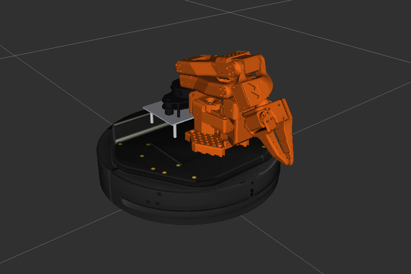
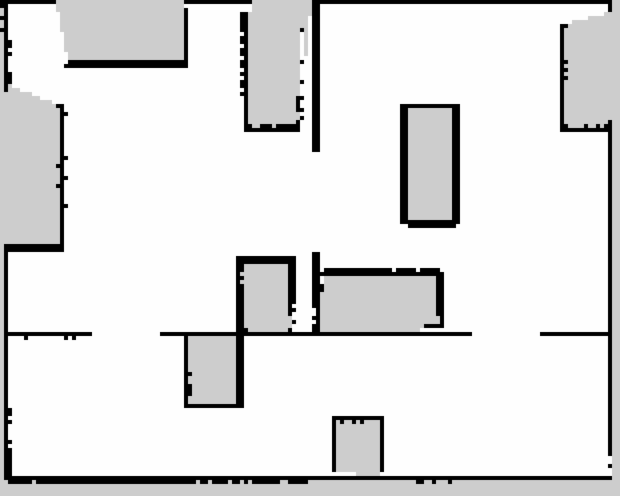
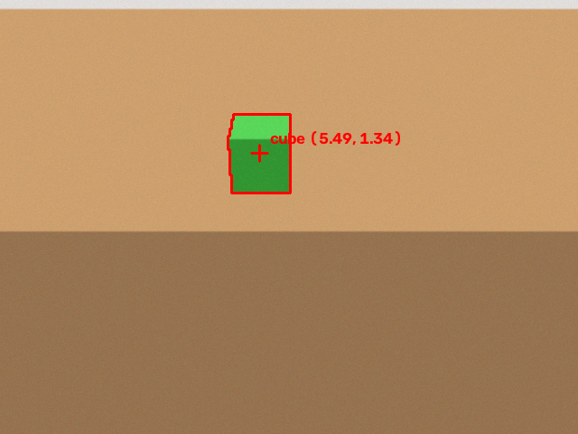
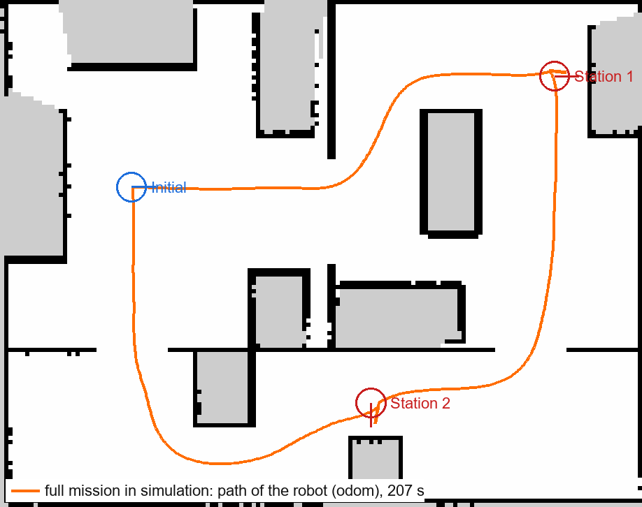

<title>Kobuki Pick &amp; Place Handbook</title>
<link rel="preconnect" href="https://fonts.googleapis.com">
<link rel="stylesheet" href="https://fonts.googleapis.com/css2?family=League+Spartan:wght@600;700;800&family=Sarabun:wght@400;500;600;700&family=IBM+Plex+Mono:wght@400;600&display=swap">
<style>
/* Course-book layout: white page, navy ink, flat colour blocks on the cover only. Light by default (it reads like a printed handbook); a dark variant is opt-in from the top bar. */
:root{
  --bg:#ffffff; --panel:#ffffff; --panel-2:#f2f4f8; --line:#d3d9e6; --rule:#1f2d5c;
  --fg:#1f2d5c; --text:#28324f; --muted:#5d6784;
  --neon:#e8742a; --gold:#b37400; --neon-soft:#fdf0e6; --link:#2f5fe0; --mark:#e0262f;
  --ok:#14805a; --warn:#b06a00; --bad:#c8213a; --info:#2f5fe0;
  --b-blue:#3d6ef0; --b-orange:#f59a3b; --b-teal:#1b9a8b; --b-navy:#1f2d5c; --b-yellow:#fcd23a; --b-pink:#e8285a; --b-sky:#8fc4f6;
  --term-bg:#0c0c0c; --term-fg:#cccccc; --term-dim:#8a8a8a; --term-line:#2b2b2b;
  --f-display:'League Spartan','Sarabun',system-ui,sans-serif;
  --f-body:'Sarabun',system-ui,sans-serif;
  --f-mono:'IBM Plex Mono','Cascadia Mono',Consolas,monospace;
  color-scheme:light;
}
:root[data-theme="dark"]{
  --bg:#141a2b; --panel:#1a2236; --panel-2:#212a40; --line:#33405e; --rule:#c9d3ee;
  --fg:#e9eefb; --text:#d5dcef; --muted:#9aa6c4;
  --neon:#f59a3b; --gold:#f2c14e; --neon-soft:#2c2a2a; --link:#8fb0ff; --mark:#ff5a5f;
  --ok:#46c28f; --warn:#f0a63a; --bad:#ff6b80; --info:#8fb0ff;
  --b-navy:#2c3d78;
  color-scheme:dark;
}

*{box-sizing:border-box}
html{scroll-behavior:smooth;scroll-padding-top:72px}
@media (prefers-reduced-motion: reduce){html{scroll-behavior:auto}}
body{margin:0;background:var(--bg);color:var(--text);font-family:var(--f-body);font-size:17px;line-height:1.8;
  padding-left:max(16px,env(safe-area-inset-left,0px));padding-right:max(16px,env(safe-area-inset-right,0px))}
a{color:var(--link);text-underline-offset:3px}
code,kbd{font-family:var(--f-mono);font-size:.86em}
p code,li code,td code,dd code{background:var(--panel-2);color:var(--fg);padding:.05em .35em;border-radius:3px}
kbd{border:1px solid var(--line);border-bottom-width:2px;border-radius:3px;padding:0 .35em;background:var(--panel)}
h1,h2,h3,h4{font-family:var(--f-display);color:var(--fg);line-height:1.3;text-wrap:balance;margin:0}
h3{font-size:1.32rem;margin-top:2.4rem}
h4{font-size:1.06rem;margin-top:1.5rem}
p{margin:.7rem 0}
ul,ol{padding-left:1.4rem;margin:.6rem 0}
li{margin:.2rem 0}
strong{color:var(--fg)}

/* top bar */
.nav{position:sticky;top:0;z-index:50;background:var(--bg);border-bottom:1px solid var(--line);margin:0 calc(-1 * max(16px,env(safe-area-inset-left,0px)))}
.nav-inner{max-width:960px;margin:0 auto;display:flex;align-items:center;gap:10px;padding:10px 16px}
.brand{display:flex;align-items:center;gap:10px;text-decoration:none;color:var(--fg);font:700 1.05rem var(--f-display);white-space:nowrap}
.brand svg{flex:none}
.nav .spacer{flex:1}
.os-switch{display:inline-flex;border:1.5px solid var(--fg)}
.os-switch button{font:600 .85rem var(--f-body);border:0;background:transparent;color:var(--fg);padding:4px 12px;cursor:pointer}
.os-switch button[aria-pressed="true"]{background:var(--fg);color:var(--bg)}
.toc-btn,.theme-btn{font:600 .85rem var(--f-body);border:1.5px solid var(--fg);background:transparent;color:var(--fg);padding:4px 12px;cursor:pointer}
.theme-btn{padding:4px 9px}
.os-switch button:focus-visible,.btn:focus-visible,.copy:focus-visible,.toc a:focus-visible,.toc-btn:focus-visible,.theme-btn:focus-visible{outline:2px solid var(--link);outline-offset:2px}
@media (max-width:560px){ .brand .long{display:none} body{font-size:16px} .nav-inner{gap:6px;padding:8px 12px} .os-switch button{padding:4px 8px} .toc-btn,.theme-btn{padding:4px 8px} }
@media (max-width:400px){ .brand span{display:none} }

/* table of contents dropdown */
.toc{position:fixed;top:58px;right:max(16px,calc((100vw - 960px)/2 + 16px));width:min(340px,calc(100vw - 32px));max-height:72vh;overflow:auto;z-index:55;
  background:var(--panel);border:1.5px solid var(--fg);padding:10px 6px;box-shadow:6px 6px 0 var(--b-sky)}
.toc:not(.open){display:none}
.toc h2{font-size:1rem;margin:2px 10px 6px}
.toc ol{list-style:none;padding:0;margin:0}
.toc a{display:grid;grid-template-columns:30px 1fr;gap:4px;padding:5px 10px;color:var(--text);text-decoration:none;font-size:.95rem;line-height:1.45}
.toc a span{font-weight:700;color:var(--fg)}
.toc a:hover{background:var(--panel-2)}
.toc a.active{background:var(--panel-2);box-shadow:inset 3px 0 0 var(--b-orange)}

main{max-width:880px;margin:0 auto;padding-bottom:120px}

/* cover */
.cover{position:relative;min-height:min(640px,88vh);display:grid;place-items:center;text-align:center;padding:56px 0 40px}
.cover-art{position:absolute;display:block}
.cover-art.l{left:0;bottom:40px;width:150px}
.cover-art.r{right:0;top:36px;width:150px}
.cover-mid{position:relative;max-width:560px;padding:0 20px}
.cover h1{font:800 clamp(2.4rem,7vw,4.4rem)/1.05 var(--f-display);color:var(--fg);letter-spacing:-.01em}
.cover h1 small{display:block;font:600 clamp(1.05rem,2.6vw,1.35rem)/1.5 var(--f-body);margin-top:14px;color:var(--text);letter-spacing:0}
.cover .go{display:inline-block;margin-top:22px;background:var(--b-blue);color:#fff;text-decoration:underline;text-underline-offset:3px;font-weight:600;padding:3px 14px;border-radius:999px}
.cover .by{position:absolute;right:0;bottom:24px;text-align:right;font:500 .9rem/1.5 var(--f-display);color:var(--fg);letter-spacing:.04em}
@media (max-width:760px){
  .cover{min-height:0;padding:200px 0 230px}
  .cover-art.l{width:72px;bottom:16px} .cover-art.r{width:96px;top:16px}
  .cover .by{position:static;margin-top:28px;text-align:center}
  .cover{display:block}
}
.contents{padding:10px 0 20px}
.contents h2{font-size:1.7rem;margin-bottom:6px}
.contents ol{list-style:none;padding:0;margin:0}
.contents > ol > li{margin-top:10px}
.contents > ol > li > a{font:700 1.05rem var(--f-display);color:var(--fg);text-decoration:none}
.contents > ol > li > a:hover{text-decoration:underline}
.contents ul{margin:2px 0 0;padding-left:1.5rem;list-style:disc}
.contents ul li{margin:0;font-size:.97rem}
.contents ul a{color:var(--text);text-decoration:none}
.contents ul a:hover{color:var(--link);text-decoration:underline}

/* chapters: "6. Title" centred, then "6.1" sections under a heavy rule, like a printed course book */
main{counter-reset:ch}
.chapter{position:relative;padding-top:96px;counter-increment:ch;counter-reset:st}
.chapter > h2{font-size:clamp(1.7rem,4vw,2.3rem);text-align:center;margin:0 0 18px}
.chapter > h2::before{content:counter(ch) ". "}
.chapter > .sub,.chapter > p{text-indent:2em}
.sub{color:var(--text)}

.step{counter-increment:st;margin-top:44px;padding-top:16px;border-top:4px solid var(--rule)}
.step > .n{display:none}
.step > div{min-width:0}
.step h3{margin:0 0 6px;font-size:1.45rem}
.step h3::before{content:counter(ch) "." counter(st) " "}
.chapter > h3{border-top:4px solid var(--rule);padding-top:16px;margin-top:44px}
.need{display:inline-block;font:600 .74rem var(--f-body);padding:0 8px;margin-left:8px;vertical-align:middle;border:1.5px solid currentColor;line-height:1.7}
.need.hw{color:var(--bad)}
.need.free{color:var(--ok)}
.need.todo{color:var(--warn)}

/* callouts */
.note{border-left:5px solid var(--b-blue);background:var(--panel-2);padding:10px 16px;margin:16px 0}
.note.warn{border-left-color:var(--b-orange)}.note.bad{border-left-color:var(--mark)}.note.ok{border-left-color:var(--b-teal)}
.expect{margin:12px 0;padding:8px 14px;border:1.5px dashed var(--ok)}
.expect::before{content:"ผลที่ต้องได้";display:block;font-weight:700;color:var(--ok);font-size:.86rem}

/* terminal: Windows Terminal / GNOME Terminal look */
.term{margin:12px 0;background:var(--term-bg);border:1px solid #3a3a3a}
.term-bar{display:flex;align-items:center;gap:8px;padding:0 8px 0 0;background:#202020;font:400 .78rem var(--f-body);color:#d0d0d0}
.term-bar i{display:none}
.term-bar .t{flex:1;overflow:hidden;text-overflow:ellipsis;white-space:nowrap;padding:6px 14px;background:var(--term-bg);max-width:max-content;border-top:2px solid var(--b-blue)}
.copy{font:600 .75rem var(--f-body);border:1px solid #555;background:transparent;color:#ddd;padding:1px 10px;cursor:pointer;margin-left:auto}
.copy:hover{background:#333}
.term pre{margin:0;padding:10px 14px;overflow-x:auto;font:400 .84rem/1.6 var(--f-mono);color:var(--term-fg);white-space:pre}
.term .p{color:#cccccc}.term .c{color:#16c60c}.term .d{color:var(--term-dim)}.term .y{color:#f9f1a5}.term .r{color:#e74856}
.os-ubuntu .term .p{color:#8ae234}
.os-ubuntu .win-only,.os-windows .ubuntu-only{display:none}

/* tables */
.tbl{overflow-x:auto;margin:14px 0}
table{border-collapse:collapse;width:100%;font-size:.95rem}
th,td{text-align:left;padding:7px 12px;border:1px solid var(--line);vertical-align:top}
th{font-weight:700;color:var(--fg);background:var(--panel-2)}
td.num{font-variant-numeric:tabular-nums;text-align:right;white-space:nowrap}

/* figures */
figure{margin:18px 0}
figcaption{font-size:.9rem;color:var(--muted);margin-top:6px;text-align:center}
.fig{border:1px solid var(--line);background:var(--panel)}
.fig svg{display:block;width:100%;height:auto}
.fig img{display:block;width:100%;height:auto;image-rendering:pixelated;background:#cdcdcd}

/* buttons */
.btn{font:600 .88rem var(--f-body);border:1.5px solid var(--fg);background:var(--panel);color:var(--fg);padding:4px 12px;cursor:pointer}
.btn:hover{background:var(--panel-2)}
.btn.primary{background:var(--fg);color:var(--bg)}
.btn[aria-pressed="true"]{background:var(--b-yellow);color:#1f2d5c}

/* mission sim */
.sim{display:grid;grid-template-columns:minmax(0,1fr) 260px;border:1.5px solid var(--fg);background:var(--panel)}
.sim-view{position:relative;min-width:0;min-height:460px;background:#e9ecf1}
.sim-view canvas{display:block;position:absolute;inset:0;width:100%;height:100%}
.sim-hud{position:absolute;left:10px;top:10px;display:flex;flex-wrap:wrap;gap:6px;max-width:calc(100% - 20px)}
.pill{font:600 .8rem var(--f-mono);padding:2px 8px;background:#fff;color:#1f2d5c;border:1px solid #1f2d5c}
.pill.hot{background:#1f2d5c;color:#fff}
.sim-toast{position:absolute;left:50%;bottom:14px;transform:translateX(-50%);font:700 1rem var(--f-body);padding:6px 16px;background:var(--b-teal);color:#fff;white-space:nowrap}
.sim-side{border-left:1.5px solid var(--fg);display:flex;flex-direction:column;min-width:0}
.sim-ctrl{display:flex;flex-wrap:wrap;gap:6px;padding:10px;border-bottom:1px solid var(--line)}
.states{list-style:none;margin:0;padding:6px 8px;flex:1}
.states li{display:grid;grid-template-columns:14px 1fr auto;gap:8px;align-items:center;padding:4px 6px;font:500 .8rem var(--f-mono);color:var(--muted);cursor:pointer}
.states li:hover{background:var(--panel-2)}.states li:focus-visible{outline:2px solid var(--link)}
.states li::before{content:"";width:10px;height:10px;border:1.5px solid var(--muted)}
.states li.done{color:var(--fg)}.states li.done::before{background:var(--b-teal);border-color:var(--b-teal)}
.states li.now{background:var(--panel-2);color:var(--fg);font-weight:600}.states li.now::before{background:var(--b-orange);border-color:var(--b-orange)}
.states li em{font-style:normal;color:var(--ok);font-size:.78rem}
.score{padding:8px 12px;border-top:1px solid var(--line);display:flex;justify-content:space-between;align-items:baseline;gap:8px;font-size:.9rem}
.score b{font:700 1.6rem var(--f-display);color:var(--fg);font-variant-numeric:tabular-nums}
.simlog{grid-column:1/-1;border-top:1.5px solid var(--fg);background:var(--term-bg);height:118px;overflow:auto;padding:6px 12px;font:400 .76rem/1.55 var(--f-mono);color:var(--term-fg)}
.simlog .w{color:#f9f1a5}.simlog .g{color:#16c60c}
@media (max-width:760px){.sim{grid-template-columns:minmax(0,1fr)}.sim-side{border-left:0;border-top:1.5px solid var(--fg)}.states{display:grid;grid-template-columns:1fr 1fr}.sim-view{min-height:0;aspect-ratio:4/3.6}}

/* hardware viewer */
.hw{display:grid;grid-template-columns:minmax(0,1.1fr) minmax(0,1fr);gap:18px;align-items:start;margin-top:16px}
.hw-view{position:relative;aspect-ratio:1/1;border:1px solid var(--line);overflow:hidden;background:#eef0f4}
.hw-view canvas{display:block;width:100%;height:100%}
.cad-loading{position:absolute;inset:0;display:grid;place-items:center;margin:0;color:#5d6784;font-size:.9rem}
.hw-tabs{display:flex;flex-wrap:wrap;gap:6px;margin-bottom:10px}
.spec{border-top:4px solid var(--rule);padding-top:10px;min-width:0}
.spec h3{margin:0 0 4px}
.spec dl{display:grid;grid-template-columns:auto minmax(0,1fr);gap:0;margin:10px 0 0;font-size:.93rem;border-top:1px solid var(--line)}
.spec dt,.spec dd{padding:5px 0;border-bottom:1px solid var(--line)}
.spec dt{color:var(--muted);padding-right:14px}.spec dd{margin:0}
@media (max-width:760px){.hw{grid-template-columns:minmax(0,1fr)}}

/* RViz panel mock-ups: red boxes like marked-up screenshots */
.rviz{border:1px solid #9aa3b2;overflow:hidden;background:#efefef;color:#111;font:13px/1.35 'Segoe UI',Tahoma,'Sarabun',sans-serif;margin:14px 0;max-width:520px}
.rviz .bar{background:#d8d8d8;padding:3px 10px;font-weight:600;border-bottom:1px solid #b9b9b9;display:flex;justify-content:space-between}
.rviz .rows{background:#fff}
.rviz .row{display:grid;grid-template-columns:minmax(0,1fr) minmax(0,1fr);border-bottom:1px solid #f0f0f0;position:relative}
.rviz .row > span{padding:3px 8px;white-space:nowrap;overflow:hidden;text-overflow:ellipsis}
.rviz .row > span:first-child{border-right:1px solid #ececec}
.rviz .row.disp > span:first-child{color:#1a5fb4;font-weight:600}
.rviz .row.hl{outline:2.5px solid var(--mark);outline-offset:-2px;z-index:1}
.rviz .row .tag{position:absolute;right:6px;top:50%;transform:translateY(-50%);background:var(--mark);color:#fff;font:700 11px var(--f-body);border-radius:50%;width:18px;height:18px;display:grid;place-items:center;padding:0}
.rviz .ok{color:#1a7f37}.rviz .er{color:#c01c28}
.rviz-wrap{overflow-x:auto}
.rviz-win{display:grid;grid-template-columns:220px minmax(0,1fr) 150px;grid-template-rows:auto auto 1fr auto;min-width:640px;height:340px;border:1px solid #9aa3b2;overflow:hidden;background:#efefef;color:#111;font:12px 'Segoe UI',Tahoma,sans-serif}
.rviz-win > div{border:1px solid #c9c9c9;position:relative}
.rviz-win .lbl{position:absolute;inset:auto 6px 6px auto;background:var(--mark);color:#fff;font:700 11px var(--f-body);padding:1px 7px}
.rviz-win .menu{grid-column:1/-1;padding:3px 8px;background:#f7f7f7}
.rviz-win .tools{grid-column:1/-1;padding:5px 8px;background:#f2f2f2;display:flex;gap:12px;flex-wrap:wrap}
.rviz-win .disp{padding:6px;background:#fff}
.rviz-win .view3d{background:#303030;color:#9a9a9a;display:grid;place-items:center}
.rviz-win .views{padding:6px;background:#fff}
.rviz-win .time{grid-column:1/-1;padding:4px 8px;background:#f7f7f7}

/* keyboard */
.keys{display:grid;grid-template-columns:repeat(3,62px);gap:6px;margin:12px 0}
.key{height:56px;border-radius:5px;background:#fbfbfb;color:#222;border:1px solid #b9bcc4;border-bottom-width:4px;display:flex;flex-direction:column;align-items:center;justify-content:center;font:600 1.2rem var(--f-mono)}
.key small{font:500 .62rem var(--f-body);color:#666;line-height:1.2;text-align:center}
.key.go{background:#fff6d6;border-color:#c9a227}
.keys-wrap{display:flex;flex-wrap:wrap;gap:24px;align-items:center}

/* map scrubber */
.scrub{display:flex;align-items:center;gap:12px;padding:8px 12px;border-top:1px solid var(--line)}
.scrub input{flex:1;accent-color:var(--b-blue)}
.scrub output{font:600 .85rem var(--f-mono);color:var(--muted);min-width:110px;text-align:right}

/* road map */
.road{list-style:none;padding:0;margin:14px 0;border-top:1px solid var(--line)}
.road li{display:grid;grid-template-columns:96px minmax(0,1fr) auto;gap:12px;align-items:center;padding:8px 2px;border-bottom:1px solid var(--line);margin:0}
.road .d{font-weight:700;color:var(--fg)}
.st{font:600 .8rem var(--f-body);white-space:nowrap;padding-left:16px;position:relative}
.st::before{content:"";position:absolute;left:0;top:50%;width:10px;height:10px;transform:translateY(-50%)}
.st.done{color:var(--ok)}.st.done::before{background:var(--b-teal)}
.st.next{color:var(--warn)}.st.next::before{background:var(--b-orange)}
.st.todo{color:var(--muted)}.st.todo::before{border:1.5px solid var(--muted)}
@media (max-width:560px){.road li{grid-template-columns:1fr auto}.road .d{grid-column:1/-1}}

/* concept boxes */
.grid2{display:grid;grid-template-columns:repeat(auto-fit,minmax(240px,1fr));gap:14px;margin:14px 0}
.card{border:1.5px solid var(--fg);background:var(--panel);padding:12px 16px;min-width:0;border-top-width:8px}
.card:nth-child(4n+1){border-top-color:var(--b-blue)}.card:nth-child(4n+2){border-top-color:var(--b-orange)}
.card:nth-child(4n+3){border-top-color:var(--b-teal)}.card:nth-child(4n+4){border-top-color:var(--b-pink)}
.card h4{margin:0 0 4px;font-size:1.15rem}
.card p{margin:0;font-size:.95rem}
.foot{margin-top:80px;padding-top:16px;border-top:4px solid var(--rule);color:var(--muted);font-size:.9rem}
</style>

<header class="nav">
  <div class="nav-inner">
    <a class="brand" href="#top"><svg width="26" height="26" viewBox="0 0 26 26" aria-hidden="true"><rect width="13" height="13" fill="#3d6ef0"/><rect x="13" width="13" height="13" fill="#1b9a8b"/><circle cx="19.5" cy="6.5" r="4.5" fill="#f59a3b"/><rect y="13" width="13" height="13" fill="#1f2d5c"/><path d="M13 13h13v13z" fill="#fcd23a"/><path d="M0 26a13 13 0 0 1 13-13v13z" fill="#e8285a"/></svg><span>Kobuki Pick &amp; Place<span class="long"> · คู่มือทีม</span></span></a>
    <span class="spacer"></span>
    <div class="os-switch" role="group" aria-label="เลือกระบบที่ใช้รันคำสั่ง">
      <button id="os-win" type="button" aria-pressed="true">Windows</button>
      <button id="os-ubu" type="button" aria-pressed="false">Ubuntu</button>
    </div>
    <button class="toc-btn" id="toc-btn" type="button" aria-expanded="false" aria-controls="toc">สารบัญ ▾</button>
    <button class="theme-btn" id="theme-btn" type="button" aria-pressed="false" title="สลับโหมดสว่าง / มืด">◐</button>
  </div>
</header>

<nav class="toc" id="toc" aria-label="สารบัญ">
  <h2>สารบัญ</h2>
  <ol>
    <li><a href="#sim"><span>1</span>ดูภารกิจเต็มแบบ 3D</a></li>
    <li><a href="#mission"><span>2</span>ภารกิจและกติกาให้คะแนน</a></li>
    <li><a href="#hardware"><span>3</span>รู้จักหุ่นยนต์</a></li>
    <li><a href="#system"><span>4</span>ROS 2 ทำงานยังไง</a></li>
    <li><a href="#setup"><span>5</span>เตรียมเครื่อง</a></li>
    <li><a href="#model"><span>6</span>ซ้อม 1: โมเดล + RViz</a></li>
    <li><a href="#mapping"><span>7</span>ซ้อม 2: หุ่นปลอม + ทำแผนที่</a></li>
    <li><a href="#check"><span>8</span>ซ้อม 3: เซฟแผนที่ + หาพิกัด</a></li>
    <li><a href="#realrobot"><span>9</span>วันใช้หุ่นจริง</a></li>
    <li><a href="#fullmission"><span>10</span>ต่อเป็นภารกิจเต็ม</a></li>
    <li><a href="#trouble"><span>11</span>ปัญหาที่เจอบ่อย</a></li>
    <li><a href="#cheat"><span>12</span>ชีทคำสั่ง</a></li>
  </ol>
</nav>

<main id="top">
<section class="cover">
  <svg class="cover-art l" viewBox="0 0 150 400" aria-hidden="true">
    <path d="M0 40a30 30 0 0 1 60 0z" fill="#3d6ef0"/><path d="M0 80a30 30 0 0 1 60 0z" fill="#3d6ef0"/><path d="M0 120a30 30 0 0 1 60 0z" fill="#3d6ef0"/>
    <rect y="120" width="80" height="80" fill="#1b9a8b"/><circle cx="40" cy="160" r="29" fill="#f59a3b"/><rect x="58" y="150" width="6" height="20" fill="#fff"/>
    <rect y="200" width="80" height="80" fill="#1f2d5c"/>
    <path d="M40 208a16 16 0 0 1 0 32z" fill="#e8285a"/><path d="M40 208a16 16 0 0 0 0 32z" fill="#fff4ec"/>
    <path d="M40 242a16 16 0 0 1 0 32z" fill="#fff4ec"/><path d="M40 242a16 16 0 0 0 0 32z" fill="#e8285a"/>
    <path d="M80 220h18v18h18v18h18v24H80z" fill="#8fc4f6"/>
    <rect y="280" width="80" height="80" fill="#fcd23a"/><path d="M0 360a40 40 0 0 1 80 0z" fill="#1f2d5c"/>
  </svg>
  <svg class="cover-art r" viewBox="0 0 150 300" aria-hidden="true">
    <path d="M0 0h70v70H52V52H35V35H17V17H0z" fill="#f59a3b"/>
    <rect x="70" width="80" height="80" fill="#1b9a8b"/>
    <rect x="88" y="14" width="44" height="52" fill="#fcd23a"/><path d="M96 26h28M96 36h28M96 46h18" stroke="#1f2d5c" stroke-width="4"/>
    <rect x="70" y="80" width="80" height="70" fill="#1f2d5c"/><path d="M80 140l30-48 30 48z" fill="#f2b84b"/>
    <rect x="70" y="150" width="80" height="70" fill="#1f2d5c"/><path d="M80 210l30-48 30 48z" fill="#18c3f0"/>
    <rect x="70" y="220" width="80" height="80" fill="#fcd23a"/><path d="M86 300v-26a24 24 0 0 1 48 0v26z" fill="#fff"/>
  </svg>
  <div class="cover-mid">
    <h1>Kobuki<br>Pick &amp; Place<small>คู่มือทีม ตั้งแต่เปิดเครื่องจนภารกิจเสร็จ</small></h1>
    <a class="go" href="#sim">เริ่มอ่านบทที่ 1</a>
  </div>
  <div class="by">01208567 ROS FOR MECHANICAL ENGINEERING<br>FINAL PROJECT · TEAM SSROBOTICS</div>
</section>

<section class="contents" aria-labelledby="contents-h">
  <h2 id="contents-h">สารบัญ</h2>
  <p>คู่มือนี้ทำให้เพื่อนที่เพิ่งเริ่ม ROS 2 ทำตามได้ทีละขั้น ซ้อมได้ครบโดยยังไม่มีหุ่นยนต์ เพราะมีหุ่นปลอมที่จำลองห้องสอบตามผังจริง วันที่ได้หุ่นก็เปลี่ยนแค่หน้าต่างเดียว Live demo วันที่ <strong>1 พ.ย. 2026</strong> คะแนนเต็ม <strong>150</strong></p>
  <ol id="contents"></ol>
</section>

<!-- 01 SIM -->
<section class="chapter" id="sim">
  <h2>ดูภารกิจเต็มแบบ 3D ก่อนลงมือ</h2>
  <p class="sub">ห้อง โต๊ะ และประตูวางตามผังในโจทย์ (สเกล 1 พิกเซล = 1.5 ซม.) ขนาดหุ่นตรงกับไฟล์ <code>kobuki_x2.urdf</code> จุดแดงคือเลเซอร์ LiDAR ที่คำนวณจากกำแพงจริงในฉาก ลากเมาส์เพื่อหมุนกล้อง หมุนลูกกลิ้งเพื่อซูม</p>
  <div class="sim" id="simbox">
    <div class="sim-view" id="sim-view">
      <div class="sim-hud"><span class="pill hot" id="sim-state">INIT</span><span class="pill" id="sim-pose">x 0.00 · y 0.00</span><span class="pill" id="sim-speed">ความเร็วจริง 0.12 m/s</span></div>
      <div class="sim-toast" id="sim-toast" hidden>ภารกิจสำเร็จ</div>
    </div>
    <div class="sim-side">
      <div class="sim-ctrl">
        <button class="btn primary" id="sim-play" type="button">▶ เล่น</button>
        <button class="btn" id="sim-reset" type="button">↺ เริ่มใหม่</button>
        <button class="btn" id="sim-fast" type="button" aria-pressed="true">เร่ง ×6</button>
        <button class="btn" id="sim-follow" type="button" aria-pressed="false">กล้องตามหุ่น</button>
      </div>
      <ol class="states" id="sim-states"></ol>
      <div class="score"><span>คะแนนที่ได้ (ไม่รวม Outstanding)</span><b id="sim-score">0</b></div>
    </div>
    <div class="simlog" id="sim-log" aria-live="polite"></div>
  </div>
  <div class="note warn"><b>อ่านก่อน:</b> ฉากนี้คือ<strong>แอนิเมชันของสิ่งที่ระบบต้องทำได้</strong>ในวันเดโม ขั้นตอนเดียวกับ <code>mission_nav2.py</code> ตอนนี้ทุกขั้นผ่านแล้วใน<strong>ซิมของ ROS จริง</strong> (หุ่นปลอม + Nav2 + กล้องปลอม + แขนปลอม ดูบทที่ 10) ส่วนที่ยังไม่ได้ลองคือกับหุ่น แขน และกล้องตัวจริง</div>
</section>

<!-- 02 MISSION -->
<section class="chapter" id="mission">
  <h2>ภารกิจและกติกาให้คะแนน</h2>
  <p>โจทย์: สร้างระบบ <strong>Autonomous Pick &amp; Place</strong> บนหุ่นยนต์เคลื่อนที่อัตโนมัติ หุ่นต้องทำ 5 อย่างต่อกันเองโดยไม่มีคนช่วย</p>
  <ol>
    <li>ออกจาก <strong>Initial Location</strong> ไป <strong>Station 1</strong></li>
    <li>แขนกลหยิบวัตถุบนโต๊ะ</li>
    <li>ไป <strong>Station 2</strong></li>
    <li>แขนกลวางวัตถุบนโต๊ะ</li>
    <li>กลับจุดเริ่มต้น</li>
  </ol>
  <figure class="fig"><svg id="plan" viewBox="262 520 430 540" role="img" aria-label="ผังห้องสอบ มีห้องบน ห้องล่าง และทางเดินขวา"></svg></figure>
  <figcaption>ผังห้องจาก PDF โจทย์ วาดด้วยพิกัดชุดเดียวกับหุ่นปลอม เส้นประสีส้มคือเส้นทางในแอนิเมชันบทที่ 1 แกน X ของหุ่นชี้ขึ้น (ไปทาง Station 1)</figcaption>
  <div class="grid2">
    <div class="tbl"><table>
      <thead><tr><th>Live demo</th><th style="text-align:right">คะแนน</th></tr></thead>
      <tbody>
        <tr><td>ถึง Station 1</td><td class="num">15</td></tr>
        <tr><td>ตรวจจับวัตถุที่ Station 1</td><td class="num">10</td></tr>
        <tr><td>หยิบวัตถุที่ Station 1</td><td class="num">40</td></tr>
        <tr><td>ถึง Station 2</td><td class="num">15</td></tr>
        <tr><td>ตรวจจับ Station 2</td><td class="num">10</td></tr>
        <tr><td>วางวัตถุที่ Station 2</td><td class="num">40</td></tr>
        <tr><td>กลับจุดเริ่มต้น</td><td class="num">10</td></tr>
        <tr><td>Outstanding Performance</td><td class="num">10</td></tr>
        <tr><td><strong>รวม</strong></td><td class="num"><strong>150</strong></td></tr>
      </tbody></table></div>
    <div>
      <div class="tbl"><table>
        <thead><tr><th>คนช่วยหุ่น (หักคะแนน)</th><th style="text-align:right">หัก</th></tr></thead>
        <tbody>
          <tr><td>ช่วยหยิบ</td><td class="num">−40</td></tr>
          <tr><td>ช่วยวาง</td><td class="num">−40</td></tr>
          <tr><td>ยกมือช่วยนำทาง</td><td class="num">−5</td></tr>
          <tr><td>ชี้บอกตำแหน่งวัตถุ</td><td class="num">−5</td></tr>
        </tbody></table></div>
      <div class="tbl"><table>
        <thead><tr><th>คะแนนรวมวิชา</th><th style="text-align:right">คะแนน</th></tr></thead>
        <tbody>
          <tr><td>Live presentation</td><td class="num">20</td></tr>
          <tr><td>Q&amp;A (รายคน)</td><td class="num">20</td></tr>
          <tr><td>Demo video (YouTube)</td><td class="num">10</td></tr>
          <tr><td>Live demo</td><td class="num">150</td></tr>
        </tbody></table></div>
    </div>
  </div>
  <div class="note"><b>สังเกต:</b> หยิบ + วาง = 80 จาก 150 คะแนน ถ้าคนต้องช่วยหยิบหรือวาง คะแนนข้อนั้นหายหมด แขน SO-100 จึงเป็นงานที่คุ้มที่สุดที่ต้องทำให้ได้</div>
</section>

<!-- 03 HARDWARE -->
<section class="chapter" id="hardware">
  <h2>รู้จักหุ่นยนต์ของเรา</h2>
  <p class="sub">หุ่น 1 คันมี 3 ชิ้นหลัก กดปุ่มด้านบนภาพเพื่อเลือกดูทีละชิ้น ลากเพื่อหมุนดูรอบตัว</p>
  <p class="sub">โมเดลเป็นไฟล์ CAD ของผู้ผลิต: Kobuki จาก <a href="https://github.com/kobuki-base/kobuki_ros/tree/devel/kobuki_description/meshes">Yujin Robot (kobuki_description)</a> และ SO-100 จาก <a href="https://github.com/google-deepmind/mujoco_menagerie/tree/main/trs_so_arm100">TheRobotStudio ผ่าน MuJoCo Menagerie</a> (<a href="cad/SO100_LICENSE.txt">Apache-2.0</a>, ที่มาและสิ่งที่แก้ไขดูใน <a href="cad/NOTICE.txt">NOTICE</a>) ข้อต่อแขนตรงกับไฟล์ <code>so_arm100.xml</code> ส่วน YDLIDAR X2 ผู้ผลิตไม่แจกไฟล์ CAD จึงขึ้นรูปตามแบบในดาต้าชีท (96.0 × 60.5 × 50.3 มม.) <strong>ตำแหน่งติดแขนและแผ่นรอง LiDAR เป็นค่าประมาณ</strong> เพราะยังไม่มีรูปหุ่นจริง ความสูง LiDAR 0.20 ม. มาจาก URDF ที่ calibrate แล้ว</p>
  <div class="hw">
    <div>
      <div class="hw-tabs" role="group" aria-label="เลือกชิ้นส่วน">
        <button class="btn" type="button" data-part="all" aria-pressed="true">ทั้งคัน</button>
        <button class="btn" type="button" data-part="base" aria-pressed="false">Kobuki</button>
        <button class="btn" type="button" data-part="lidar" aria-pressed="false">LiDAR X2</button>
        <button class="btn" type="button" data-part="arm" aria-pressed="false">SO-100</button>
        <button class="btn" type="button" data-part="tf" aria-pressed="false">แกน TF</button>
      </div>
      <div class="hw-view" id="hw-view"></div>
    </div>
    <div class="spec" id="hw-spec"></div>
  </div>
  <h3>แกนพิกัด (TF) ที่ต้องรู้จัก</h3>
  <p>ROS ต้องรู้ว่าแต่ละชิ้นอยู่ตรงไหนเทียบกับอะไร เรียกว่า <strong>TF</strong> ชื่อแกนพวกนี้จะเห็นใน RViz ตลอด</p>
  <figure class="fig"><svg viewBox="0 0 760 210" role="img" aria-label="ต้นไม้ TF map ไป odom ไป base_link ไป laser และล้อ">
    <defs><marker id="ar" viewBox="0 0 10 10" refX="9" refY="5" markerWidth="7" markerHeight="7" orient="auto"><path d="M0 0L10 5L0 10z" fill="var(--muted)"/></marker></defs>
    <g font-family="IBM Plex Mono, monospace" font-size="15" text-anchor="middle">
      <rect x="20" y="70" width="110" height="44" rx="3" fill="var(--panel-2)" stroke="var(--line)"/><text x="75" y="97" fill="var(--fg)">map</text>
      <rect x="190" y="70" width="110" height="44" rx="3" fill="var(--panel-2)" stroke="var(--line)"/><text x="245" y="97" fill="var(--fg)">odom</text>
      <rect x="360" y="70" width="130" height="44" rx="3" fill="var(--neon-soft)" stroke="var(--neon)"/><text x="425" y="97" fill="var(--fg)">base_link</text>
      <rect x="570" y="10" width="170" height="40" rx="3" fill="var(--panel-2)" stroke="var(--line)"/><text x="655" y="35" fill="var(--fg)">laser</text>
      <rect x="570" y="72" width="170" height="40" rx="3" fill="var(--panel-2)" stroke="var(--line)"/><text x="655" y="97" fill="var(--fg)">wheel_left/right</text>
      <rect x="570" y="134" width="170" height="40" rx="3" fill="var(--panel-2)" stroke="var(--line)"/><text x="655" y="159" fill="var(--fg)">so100_* → gripper_tip</text>
      <path d="M130 92H186" stroke="var(--muted)" marker-end="url(#ar)"/><path d="M300 92H356" stroke="var(--muted)" marker-end="url(#ar)"/>
      <path d="M490 86L566 32" stroke="var(--muted)" marker-end="url(#ar)"/><path d="M490 92H566" stroke="var(--muted)" marker-end="url(#ar)"/><path d="M490 98L566 152" stroke="var(--muted)" marker-end="url(#ar)"/>
      <g font-family="Sarabun, sans-serif" font-size="12.5" fill="var(--muted)">
        <text x="158" y="136">SLAM</text><text x="328" y="136">Kobuki / หุ่นปลอม</text><text x="528" y="196">robot_state_publisher (URDF)</text>
      </g>
    </g></svg></figure>
  <div class="tbl"><table>
    <thead><tr><th>แกน</th><th>คืออะไร</th><th>ใครสร้าง</th></tr></thead>
    <tbody>
      <tr><td><code>map</code></td><td>พิกัดของแผนที่ ไม่ขยับตามหุ่น</td><td>slam_toolbox (ภายหลังคือ Nav2/AMCL)</td></tr>
      <tr><td><code>odom</code></td><td>จุดที่หุ่นเปิดเครื่อง นับจากการหมุนของล้อ ยิ่งวิ่งไกลยิ่งเพี้ยน</td><td><code>kobuki_ros2.py</code> หรือ <code>fake_robot.py</code></td></tr>
      <tr><td><code>base_link</code></td><td>กลางตัวหุ่นบนพื้น แกนแดง (X) ชี้ไปหน้าหุ่น</td><td>–</td></tr>
      <tr><td><code>laser</code></td><td>ตัว LiDAR สูง 0.20 ม. หมุน −90° (calibrate จากหุ่นจริง 18 ต.ค.)</td><td>robot_state_publisher อ่านจาก URDF</td></tr>
    </tbody></table></div>
</section>

<!-- 04 SYSTEM -->
<section class="chapter" id="system">
  <h2>ROS 2 ทำงานยังไง (เข้าใจใน 3 นาที)</h2>
  <div class="grid2">
    <div class="card"><h4>Node</h4><p>โปรแกรม 1 ตัวที่ทำงาน 1 อย่าง เช่น อ่าน LiDAR, ขับล้อ, ทำแผนที่ เรารัน 1 node ต่อ 1 หน้าต่าง terminal</p></div>
    <div class="card"><h4>Topic</h4><p>ท่อส่งข้อมูลที่มีชื่อ เช่น <code>/scan</code> node หนึ่งส่ง (publish) อีก node รับ (subscribe) ไม่ต้องรู้จักกัน</p></div>
    <div class="card"><h4>TF</h4><p>ตำแหน่งของแต่ละชิ้นเทียบกัน (บทที่ 3) RViz ใช้ TF วาดทุกอย่างให้ถูกที่</p></div>
    <div class="card"><h4>QoS</h4><p>ข้อตกลงการส่ง เช่น Best Effort / Reliable ถ้าฝั่งส่งกับฝั่งรับตั้งไม่ตรงกัน ข้อมูลจะไม่มา และไม่มี error บอก</p></div>
  </div>
  <h3>ผังการคุยกันของ node ตอนทำแผนที่</h3>
  <figure class="fig"><svg viewBox="0 0 760 330" role="img" aria-label="ผัง node และ topic ตอนทำแผนที่">
    <defs><marker id="ar2" viewBox="0 0 10 10" refX="9" refY="5" markerWidth="7" markerHeight="7" orient="auto"><path d="M0 0L10 5L0 10z" fill="var(--neon)"/></marker></defs>
    <g font-family="Sarabun, sans-serif" font-size="14">
      <rect x="16" y="24" width="190" height="56" rx="3" fill="var(--panel-2)" stroke="var(--line)"/><text x="111" y="50" text-anchor="middle" fill="var(--fg)" font-weight="600">หน้าต่าง 1 · LiDAR</text><text x="111" y="68" text-anchor="middle" fill="var(--muted)" font-size="12">lidar_ros2.py</text>
      <rect x="16" y="120" width="190" height="56" rx="3" fill="var(--panel-2)" stroke="var(--line)"/><text x="111" y="146" text-anchor="middle" fill="var(--fg)" font-weight="600">หน้าต่าง 2 · Kobuki</text><text x="111" y="164" text-anchor="middle" fill="var(--muted)" font-size="12">kobuki_ros2.py</text>
      <rect x="16" y="216" width="190" height="56" rx="3" fill="var(--panel-2)" stroke="var(--line)"/><text x="111" y="242" text-anchor="middle" fill="var(--fg)" font-weight="600">หน้าต่าง 3 · Model</text><text x="111" y="260" text-anchor="middle" fill="var(--muted)" font-size="12">robot_state_publisher</text>
      <rect x="300" y="100" width="170" height="64" rx="3" fill="var(--neon-soft)" stroke="var(--neon)"/><text x="385" y="128" text-anchor="middle" fill="var(--fg)" font-weight="600">หน้าต่าง 4 · SLAM</text><text x="385" y="148" text-anchor="middle" fill="var(--muted)" font-size="12">slam_toolbox</text>
      <rect x="560" y="100" width="180" height="64" rx="3" fill="var(--panel-2)" stroke="var(--line)"/><text x="650" y="128" text-anchor="middle" fill="var(--fg)" font-weight="600">หน้าต่าง 5 · RViz</text><text x="650" y="148" text-anchor="middle" fill="var(--muted)" font-size="12">ภาพบนจอ</text>
      <rect x="300" y="250" width="170" height="56" rx="3" fill="var(--panel-2)" stroke="var(--line)"/><text x="385" y="276" text-anchor="middle" fill="var(--fg)" font-weight="600">หน้าต่าง 6 · Teleop</text><text x="385" y="294" text-anchor="middle" fill="var(--muted)" font-size="12">คีย์บอร์ด</text>
      <g fill="none" stroke="var(--neon)" stroke-width="1.6">
        <path d="M206 52C260 52 260 118 296 122" marker-end="url(#ar2)"/><path d="M206 148H296" marker-end="url(#ar2)"/><path d="M206 244C260 244 260 168 296 156" marker-end="url(#ar2)"/>
        <path d="M470 132H556" marker-end="url(#ar2)"/><path d="M300 278C230 278 200 220 160 180" marker-end="url(#ar2)"/>
      </g>
      <g font-family="IBM Plex Mono, monospace" font-size="12" fill="var(--gold)">
        <text x="222" y="78">/scan</text><text x="222" y="140">/odom, /tf</text><text x="222" y="226">/tf_static</text><text x="490" y="124">/map</text><text x="196" y="300">/cmd_vel</text>
      </g>
    </g></svg></figure>
  <p>วันซ้อม: <strong>หน้าต่าง 1 + 2 ถูกแทนด้วย <code>fake_robot.py</code> ตัวเดียว</strong> มันส่ง topic ชื่อเดิมทุกตัว node อื่นจึงไม่รู้ว่าเป็นหุ่นปลอม</p>
</section>

<!-- 05 SETUP -->
<section class="chapter" id="setup">
  <h2>เตรียมเครื่อง: ลงโปรแกรม + เอาไฟล์มา</h2>
  <p class="sub">เลือกระบบที่ใช้ด้วยปุ่ม <strong>Windows / Ubuntu</strong> มุมขวาบน คำสั่งทั้งเว็บจะเปลี่ยนตาม ไฟล์ทุกไฟล์ของทีมอยู่ใน GitHub ที่ <a href="https://github.com/SSRobotic/kobuki-pick-place" class="repo-link">github.com/SSRobotic/kobuki-pick-place</a> ทำขั้น 1–3 ครั้งเดียวต่อเครื่อง</p>
  <div class="tbl"><table>
    <thead><tr><th></th><th>Windows 10/11</th><th>Ubuntu 22.04</th></tr></thead>
    <tbody>
      <tr><td>ROS 2 Humble มาจาก</td><td><code>pixi install</code> (โหลดชุดเดียวกับทีมให้เอง)</td><td><code>apt</code></td></tr>
      <tr><td>โฟลเดอร์งาน</td><td><code>~\kobuki-pick-place</code> ไฟล์อยู่ใน <code>robot\</code></td><td><code>~/kobuki-pick-place/robot</code></td></tr>
      <tr><td>ขึ้นต้นทุกคำสั่ง</td><td><code>pixi run</code></td><td><code>source /opt/ros/humble/setup.bash</code> ครั้งเดียวต่อหน้าต่าง</td></tr>
      <tr><td>terminal</td><td>PowerShell</td><td>Terminal (Ctrl+Alt+T)</td></tr>
    </tbody></table></div>

  <div class="step"><span class="n">1</span><div>
    <h3>ลง git <span class="need free">ครั้งเดียว</span></h3>
    <p class="win-only">ดาวน์โหลดจาก <a href="https://git-scm.com/download/win">git-scm.com/download/win</a> กด Next จนจบ หรือสั่งใน PowerShell:</p>
    <div class="cmd" data-title="ลง git" data-win="winget install --id Git.Git -e" data-ubu="sudo apt update&#10;sudo apt install -y git"></div>
    <p class="win-only">ลงเสร็จแล้ว<strong>ปิด PowerShell แล้วเปิดใหม่</strong></p>
  </div></div>

  <div class="step"><span class="n">2</span><div>
    <h3>เอาไฟล์ของทีมมาลงเครื่อง (git clone) <span class="need free">ครั้งเดียว</span></h3>
    <div class="cmd" data-title="clone" data-win="cd ~&#10;git clone https://github.com/SSRobotic/kobuki-pick-place.git" data-ubu="cd ~&#10;git clone https://github.com/SSRobotic/kobuki-pick-place.git" data-out="Cloning into 'kobuki-pick-place'..."></div>
    <div class="expect">ได้โฟลเดอร์ <code>kobuki-pick-place</code> ในโฟลเดอร์ผู้ใช้ ข้างในมี <code>robot/</code>, <code>docs/</code>, <code>README.md</code></div>
    <p><strong>เพื่อนแก้ไฟล์แล้ว อยากได้ของใหม่:</strong> เข้าโฟลเดอร์ <code>kobuki-pick-place</code> แล้วสั่ง <code>git pull</code></p>
  </div></div>

  <div class="step"><span class="n">3</span><div>
    <h3>ลง ROS 2 Humble + SLAM + Nav2 <span class="need free">ครั้งเดียว</span></h3>
    <div class="win-only">
      <p>ใช้ <strong>pixi</strong> ไม่ต้องลง ROS เอง pixi อ่านไฟล์ <code>pixi.lock</code> ในโฟลเดอร์แล้วโหลดชุดที่ทีมใช้ให้ (ทุกเครื่องเวอร์ชันตรงกัน)</p>
      <ol>
        <li>ลง pixi (คำสั่งข้างล่าง) แล้ว<strong>ปิด PowerShell แล้วเปิดใหม่</strong></li>
        <li>เข้าโฟลเดอร์แล้วสั่ง <code>pixi install</code> โหลดประมาณ 0.9 GB ใช้พื้นที่ประมาณ 5.5 GB รอ 10–30 นาที</li>
      </ol>
    </div>
    <div class="ubuntu-only">
      <p>ถ้ายังไม่มี ROS 2 Humble ให้ลงตาม <a href="https://docs.ros.org/en/humble/Installation/Ubuntu-Install-Debs.html">คู่มือทางการ</a> ก่อน แล้วลงแพ็กเกจที่ทีมใช้ด้วยคำสั่งข้างล่าง</p>
    </div>
    <div class="cmd" data-title="ลง pixi (ครั้งเดียว)" data-win="powershell -ExecutionPolicy ByPass -c &quot;irm -useb https://pixi.sh/install.ps1 | iex&quot;" data-ubu=""></div>
    <div class="cmd" data-title="ลง ROS + แพ็กเกจ" data-win="cd ~\kobuki-pick-place&#10;pixi install" data-ubu="sudo apt install -y ros-humble-desktop ros-humble-slam-toolbox ros-humble-navigation2 ros-humble-nav2-bringup ros-humble-teleop-twist-keyboard python3-serial python3-numpy" data-out=""></div>
  </div></div>

  <div class="step"><span class="n">1</span><div>
    <h3>เปิด terminal และเข้าโฟลเดอร์งาน <span class="need free">ไม่ต้องมีหุ่น</span></h3>
    <p>ทำแบบนี้ <strong>ทุกครั้งที่เปิดหน้าต่างใหม่</strong> ทุกหน้าต่างในคู่มือนี้เริ่มด้วยขั้นนี้</p>
    <div class="cmd" data-title="ทุกหน้าต่าง" data-win="cd ~\kobuki-pick-place" data-ubu="source /opt/ros/humble/setup.bash&#10;cd ~/kobuki-pick-place/robot"></div>
    <p class="ubuntu-only">ไม่อยากพิมพ์ <code>source</code> ทุกครั้ง: รัน <code>echo "source /opt/ros/humble/setup.bash" &gt;&gt; ~/.bashrc</code> ครั้งเดียวพอ</p>
  </div></div>

  <div class="step"><span class="n">2</span><div>
    <h3>เช็คว่า ROS ใช้ได้</h3>
    <div class="cmd" data-title="ทดสอบ" data-win="pixi run ros2 topic list" data-ubu="ros2 topic list" data-out="/parameter_events&#10;/rosout"></div>
    <div class="expect">2 บรรทัดนี้ = ROS พร้อมใช้ ถ้าขึ้น <code>command not found</code> แปลว่ายังไม่ได้ทำขั้นก่อนหน้า (Windows: ลืม <code>cd</code> เข้าโฟลเดอร์ / Ubuntu: ลืม <code>source</code>)</div>
  </div></div>

  <div class="step"><span class="n">3</span><div>
    <h3>เช็คว่ามีไฟล์ครบ</h3>
    <div class="tbl"><table><thead><tr><th>ไฟล์</th><th>ใช้ทำอะไร</th></tr></thead><tbody>
      <tr><td><code>fake_robot.py</code></td><td>หุ่นปลอมสำหรับซ้อม (แทน LiDAR + Kobuki)</td></tr>
      <tr><td><code>lidar_ros2.py</code>, <code>kobuki_ros2.py</code></td><td>ไดรเวอร์หุ่นจริง</td></tr>
      <tr><td><code>kobuki_x2.urdf</code>, <code>robot_model.launch.py</code></td><td>โมเดลหุ่น + ตำแหน่ง LiDAR + ข้อต่อแขน SO-100</td></tr>
      <tr><td><code>meshes/</code>, <code>arm_rest_publisher.py</code></td><td>ไฟล์ CAD ของหุ่นสำหรับ RViz และตัวส่งท่าพับของแขน</td></tr>
      <tr><td><code>slam_params.yaml</code></td><td>ค่าตั้งทำแผนที่ (จูนให้ X2 แล้ว)</td></tr>
      <tr><td><code>mapping.rviz</code></td><td>ค่า RViz สำเร็จรูป</td></tr>
      <tr><td><code>ros_check.py</code></td><td>ตรวจทั้งระบบในคำสั่งเดียว</td></tr>
    </tbody></table></div>
  </div></div>
  <div class="note"><b>กติกาทองคำ:</b> <strong>1 คำสั่งที่รันค้าง = 1 หน้าต่าง</strong> ห้ามปิดหน้าต่างทิ้ง จะหยุดให้กด <kbd>Ctrl</kbd>+<kbd>C</kbd> ในหน้าต่างนั้น คำสั่งที่รันแล้วจบเอง ใช้หน้าต่าง "สำรอง" หน้าต่างเดียวพอ</div>
</section>

<!-- 06 MODEL -->
<section class="chapter" id="model">
  <h2>ซ้อม 1: เปิดโมเดลหุ่น + ตั้งค่า RViz เองทุกช่อง</h2>
  <p class="sub">ทำได้เลยโดยไม่ต้องมีหุ่นยนต์ เป้าหมายคือรู้จักหน้าจอ RViz และเห็นหุ่นของเราในนั้น</p>

  <div class="step"><span class="n">1</span><div>
    <h3>หน้าต่าง A: เปิดโมเดลหุ่น <span class="need free">ไม่ต้องมีหุ่น</span></h3>
    <div class="cmd" data-title="หน้าต่าง A · Robot model" data-win="pixi run ros2 launch robot\robot_model.launch.py" data-ubu="ros2 launch ./robot_model.launch.py" data-out="[INFO] [launch]: Default logging verbosity is set to INFO&#10;[INFO] [robot_state_publisher.EXE-1]: process started with pid [24244]&#10;[INFO] [python.exe-2]: process started with pid [26884]&#10;[robot_state_publisher] got segment base_link&#10;[robot_state_publisher] got segment gripper_tip&#10;[robot_state_publisher] got segment laser&#10;[robot_state_publisher] got segment lidar_deck&#10;[robot_state_publisher] got segment so100_base&#10;[robot_state_publisher] got segment so100_gripper&#10;[robot_state_publisher] got segment so100_jaw&#10;[robot_state_publisher] got segment so100_lower_arm&#10;[robot_state_publisher] got segment so100_shoulder&#10;[robot_state_publisher] got segment so100_upper_arm&#10;[robot_state_publisher] got segment so100_wrist&#10;[robot_state_publisher] got segment wheel_left_link&#10;[robot_state_publisher] got segment wheel_right_link"></div>
    <div class="expect">ครบ 13 บรรทัด <code>got segment</code> (ผลจริงจากเครื่องทีม 27 ต.ค.) = ROS รู้จักชิ้นส่วนของหุ่นแล้ว · <code>python.exe-2</code> คือ <code>arm_rest_publisher.py</code> ที่ส่งท่าพับของแขนทาง <code>/joint_states</code> ไม่มีตัวนี้แขนจะไม่ขึ้นใน RViz</div>
    <p>รูปหุ่นใน RViz มาจากไฟล์ CAD ในโฟลเดอร์ <code>meshes/</code> ข้างไฟล์ launch ย้ายเครื่องต้องย้ายโฟลเดอร์นี้ไปด้วย วันที่มีไดรเวอร์แขนจริงให้เติม <code>arm:=none</code> ท้ายคำสั่ง</p>
  </div></div>

  <div class="step"><span class="n">2</span><div>
    <h3>หน้าต่าง B: เปิด RViz แบบเปล่า</h3>
    <div class="cmd" data-title="หน้าต่าง B · RViz" data-win="pixi run rviz2" data-ubu="rviz2"></div>
    <p>หน้าจอ RViz แบ่งเป็น 5 ส่วน จำชื่อไว้ ทั้งคู่มือจะอ้างถึงชื่อพวกนี้</p>
    <div class="rviz-wrap"><div class="rviz-win" aria-label="แผนผังหน้าจอ RViz">
      <div class="menu">File &nbsp; Panels &nbsp; Help</div>
      <div class="tools">Interact · Move Camera · Select · Focus · Measure · <b>2D Pose Estimate</b> · <b>2D Goal Pose</b> · <b>Publish Point</b><span class="lbl">① แถบเครื่องมือ</span></div>
      <div class="disp">Global Options<br>Global Status<br>Grid<br><br><span style="display:inline-block;border:1px solid #bbb;padding:1px 10px;border-radius:3px;background:#fafafa">Add</span><span class="lbl">② Displays</span></div>
      <div class="view3d">จอ 3D<span class="lbl">③ ภาพ</span></div>
      <div class="views">Type: Orbit<br>Target Frame<span class="lbl">④ Views</span></div>
      <div class="time">ROS Time … &nbsp;&nbsp; <b>[Reset]</b><span class="lbl">⑤ Time</span></div>
    </div></div>
    <div class="tbl"><table><thead><tr><th>ทำอะไรในจอ 3D</th><th>เมาส์</th></tr></thead><tbody>
      <tr><td>หมุนมุมมอง</td><td>ลากปุ่มซ้าย</td></tr>
      <tr><td>เลื่อนภาพ</td><td>ลากปุ่มกลาง หรือ Shift + ลากซ้าย</td></tr>
      <tr><td>ซูม</td><td>หมุนลูกกลิ้ง</td></tr>
    </tbody></table></div>
    <div class="note">ถ้าไม่เห็นช่อง Views ไปที่เมนู <strong>Panels → Views</strong> ภาพค้างหลังรีสตาร์ท node ให้กด <strong>Reset</strong> มุมล่างขวา</div>
    <div class="note win-only">บน Windows ภาษาไทย RViz อาจแสดงตัวเลขเป็นเลขไทย เช่น Frame Rate <code>๓๐</code> แปลว่า 30 เป็นเรื่องปกติ ไม่ใช่ error</div>
  </div></div>

  <div class="step"><span class="n">3</span><div>
    <h3>ตั้ง Fixed Frame = <code>base_link</code></h3>
    <p>กด ▸ ที่ <strong>Global Options</strong> → คลิกช่อง Fixed Frame (ค่าเดิมเป็น <code>map</code>) → พิมพ์ <code>base_link</code> → Enter</p>
    <div class="rv" data-rows='[[0,"Global Options","",""],[1,"Fixed Frame","base_link","1"],[1,"Background Color","48; 48; 48",""],[1,"Frame Rate","30",""],[0,"✓ Global Status: Ok","","ok"],[0,"Grid","☑","d"]]'></div>
    <p><strong>Fixed Frame</strong> = จุดที่กล้องยึดไว้นิ่ง ๆ ตอนนี้ยังไม่มีแผนที่ เลยยึดกับตัวหุ่นไปก่อน ถ้าตั้งถูก Global Status จะเป็น ✓ สีเขียว</p>
  </div></div>

  <div class="step"><span class="n">4</span><div>
    <h3>ตั้ง Grid ให้ 1 ช่อง = 1 เมตร</h3>
    <div class="rv" data-rows='[[0,"Grid","☑","d"],[1,"Reference Frame","&lt;Fixed Frame&gt;",""],[1,"Plane Cell Count","20","1"],[1,"Cell Size","1","2"],[1,"Color","160; 160; 164",""],[1,"Alpha","0.5",""]]'></div>
  </div></div>

  <div class="step"><span class="n">5</span><div>
    <h3>เพิ่มโมเดลหุ่น (RobotModel)</h3>
    <ol>
      <li>กด <strong>Add</strong> → แท็บ <strong>By display type</strong> → <code>rviz_default_plugins</code> → <strong>RobotModel</strong> → OK</li>
      <li>กด ▸ ที่ RobotModel แล้วตั้งตามกรอบส้ม</li>
    </ol>
    <div class="rv" data-rows='[[0,"RobotModel","☑","d"],[1,"✓ Status: Ok","","ok"],[1,"Visual Enabled","☑",""],[1,"Alpha","1",""],[1,"Description Source","Topic","1"],[1,"Description Topic","/robot_description","2"],[2,"Depth","5",""],[2,"History Policy","Keep Last",""],[2,"Reliability Policy","Reliable",""],[2,"Durability Policy","Transient Local","3"]]'></div>
    <div class="note bad"><b>จุดที่พลาดบ่อยที่สุด:</b> Durability ต้องเป็น <strong>Transient Local</strong> เพราะ robot_state_publisher ส่งโมเดลแค่ครั้งเดียวตอนเปิด ถ้าเป็น Volatile, RViz ที่เปิดทีหลังจะไม่ได้รับ หุ่นจะไม่ขึ้น</div>
    <div class="expect">หุ่นจากไฟล์ CAD แบบในภาพ: Kobuki สีดำมี<strong>จุดเหลืองบนหลัง</strong> · LiDAR X2 บนแผ่นรองสีเทา · <strong>แขน SO-100 สีส้มพับอยู่ด้านหน้า</strong> (ฝั่งที่แขนยื่นไป = หน้าหุ่น) ถ้า RobotModel ขึ้น <code>Could not load resource</code> แปลว่าหาโฟลเดอร์ <code>meshes/</code> ไม่เจอ</div>
    <figure class="fig"></figure>
    <figcaption>ภาพหน้าจอ RViz จริงจากเครื่องทีม (Windows, 27 ต.ค.) หลังเปิด <code>robot_model.launch.py</code> ปิด TF ไว้ให้เห็นตัวหุ่นชัด</figcaption>
  </div></div>

  <div class="step"><span class="n">6</span><div>
    <h3>เพิ่มแกนพิกัด (TF)</h3>
    <p><strong>Add</strong> → <strong>TF</strong> → OK แล้วตั้ง</p>
    <div class="rv" data-rows='[[0,"TF","☑","d"],[1,"Show Names","☑","1"],[1,"Show Axes","☑",""],[1,"Show Arrows","☐",""],[1,"Marker Scale","0.4","2"],[1,"Frame Timeout","15",""]]'></div>
    <div class="expect">แกน 3 สีพร้อมชื่อ <code>base_link</code>, <code>laser</code>, <code>lidar_deck</code>, ล้อทั้งสอง, แขน <code>so100_*</code> และ <code>gripper_tip</code> (จุดกลางปากคีบ) · <span style="color:#e5484d">แดง = X หน้า</span> · <span style="color:#30a46c">เขียว = Y ซ้าย</span> · <span style="color:#3e63dd">น้ำเงิน = Z บน</span> · แกนแดงของ <code>laser</code> ชี้ไป<strong>ขวา</strong>ของหุ่น (หมุน −90°)</div>
  </div></div>

  <div class="step"><span class="n">7</span><div>
    <h3>ปรับมุมกล้องและเซฟค่า</h3>
    <ol>
      <li>ช่อง Views: <strong>Type</strong> = <code>Orbit</code>, <strong>Target Frame</strong> = <code>base_link</code></li>
      <li>ลองเปลี่ยนเป็น <code>TopDownOrtho</code> (มองจากบนลงล่าง ใช้ตอนดูแผนที่) แล้วเปลี่ยนกลับ</li>
      <li>เมนู <strong>File → Save Config As</strong> → ชื่อ <code>practice_model.rviz</code> ครั้งหน้าเปิดด้วย <code>rviz2 -d practice_model.rviz</code></li>
    </ol>
  </div></div>

  <div class="step"><span class="n">8</span><div>
    <h3>หน้าต่าง C (สำรอง): ดูข้อมูลด้วยคำสั่ง</h3>
    <div class="cmd" data-title="หน้าต่าง C · สำรอง" data-win="pixi run ros2 node list" data-ubu="ros2 node list" data-out="/robot_state_publisher&#10;/rviz"></div>
    <div class="cmd" data-title="หน้าต่าง C · สำรอง" data-win="pixi run ros2 run tf2_ros tf2_echo base_link laser" data-ubu="ros2 run tf2_ros tf2_echo base_link laser" data-out="At time 0.0&#10;- Translation: [0.000, 0.000, 0.200]&#10;- Rotation: in Quaternion [0.000, 0.000, -0.707, 0.707]&#10;- Rotation: in RPY (degree) [0.000, -0.000, -90.000]"></div>
    <div class="expect">LiDAR สูง <strong>0.200 ม.</strong> หมุน <strong>−90°</strong> ตรงกับ URDF กด Ctrl+C เพื่อออก</div>
    <div class="cmd" data-title="หน้าต่าง C · สำรอง" data-win="pixi run ros2 run tf2_tools view_frames" data-ubu="ros2 run tf2_tools view_frames"></div>
    <p>ได้ไฟล์ <code>frames_&lt;วันที่&gt;.pdf</code> เปิดดูจะเห็นผังแกนแบบเดียวกับในบทที่ 3</p>
  </div></div>
  <div class="note ok"><b>จบซ้อม 1:</b> ปิด RViz แล้วกด Ctrl+C ในหน้าต่าง A</div>
</section>

<!-- 07 MAPPING -->
<section class="chapter" id="mapping">
  <h2>ซ้อม 2: หุ่นปลอม + ทำแผนที่ (เหมือนวันจริง)</h2>
  <p class="sub">หุ่นปลอมจำลองห้องสอบตามผังในบทที่ 2 ขับด้วยคีย์บอร์ดได้ ชนกำแพงแล้วหยุด และส่งข้อมูลชื่อเดียวกับหุ่นจริง แผนที่ในบทนี้ได้มาจากการรันจริงบนเครื่องทีมด้วยคำสั่งชุดเดียวกัน</p>
  <div class="tbl"><table>
    <thead><tr><th>หน้าต่าง</th><th>วันจริง</th><th>วันซ้อม (ใช้อันนี้)</th></tr></thead>
    <tbody>
      <tr><td>1</td><td>LiDAR <code>lidar_ros2.py --mirror</code></td><td><strong><code>fake_robot.py</code></strong> (แทนทั้ง 1 และ 2)</td></tr>
      <tr><td>2</td><td>Kobuki <code>kobuki_ros2.py --enable-motion</code></td><td>– ไม่ต้องเปิด</td></tr>
      <tr><td>3</td><td>Robot model</td><td>เหมือนเดิม</td></tr>
      <tr><td>4</td><td>SLAM</td><td>เหมือนเดิม</td></tr>
      <tr><td>5</td><td>RViz</td><td>ตั้งเองตามขั้นที่ 5</td></tr>
      <tr><td>6</td><td>Teleop</td><td>เหมือนเดิม</td></tr>
      <tr><td>7</td><td>สำรอง</td><td>สำรอง</td></tr>
    </tbody></table></div>
  <div class="note bad"><b>ห้าม</b>เปิด <code>fake_robot.py</code> พร้อมหุ่นจริง จะมี <code>/scan</code> กับ <code>/odom</code> ซ้ำ 2 แหล่ง ข้อมูลจะตีกัน</div>

  <div class="step"><span class="n">1</span><div>
    <h3>หน้าต่าง 1: หุ่นปลอม <span class="need free">ไม่ต้องมีหุ่น</span></h3>
    <div class="cmd" data-title="หน้าต่าง 1 · fake_robot" data-win="pixi run python robot\fake_robot.py" data-ubu="python3 fake_robot.py" data-out="[INFO] [fake_robot]: Fake robot ready at Initial Location. Publishing /scan, /odom, TF odom -> base_link, /stations&#10;[INFO] [fake_robot]:   Station 1: x=5.04 y=1.32 (odom)&#10;[INFO] [fake_robot]:   Station 2: x=2.85 y=-2.58 (odom)&#10;[INFO] [fake_robot]:   Initial: x=0.00 y=0.00 (odom)"></div>
    <div class="expect">พิกัด Station ขึ้นครบ 3 จุด หุ่นเริ่มที่ Initial หันหน้าไปทาง Station 1</div>
  </div></div>

  <div class="step"><span class="n">2</span><div>
    <h3>หน้าต่าง 3: โมเดลหุ่น</h3>
    <div class="cmd" data-title="หน้าต่าง 3 · Robot model" data-win="pixi run ros2 launch robot\robot_model.launch.py" data-ubu="ros2 launch ./robot_model.launch.py"></div>
  </div></div>

  <div class="step"><span class="n">3</span><div>
    <h3>หน้าต่าง 7 (สำรอง): ตรวจก่อนเปิด SLAM</h3>
    <p>เช็คว่าข้อมูลมาครบ วันจริงก็ต้องเช็คแบบนี้</p>
    <div class="cmd" data-title="หน้าต่าง 7 · สำรอง" data-win="pixi run ros2 topic hz /scan" data-ubu="ros2 topic hz /scan" data-out="average rate: 4.000&#10;..."></div>
    <div class="cmd" data-title="หน้าต่าง 7 · สำรอง" data-win="pixi run ros2 topic hz /odom" data-ubu="ros2 topic hz /odom" data-out="average rate: 50.0&#10;..."></div>
    <div class="expect"><code>/scan</code> ≈ 4 ครั้ง/วินาที, <code>/odom</code> ≈ 50 ครั้ง/วินาที (หุ่นจริงวัดได้ 3.8 และ 50.5) กด Ctrl+C เพื่อหยุด</div>
  </div></div>

  <div class="step"><span class="n">4</span><div>
    <h3>หน้าต่าง 4: SLAM</h3>
    <div class="cmd" data-title="หน้าต่าง 4 · SLAM" data-win="pixi run ros2 run slam_toolbox async_slam_toolbox_node --ros-args --params-file robot\slam_params.yaml" data-ubu="ros2 run slam_toolbox async_slam_toolbox_node --ros-args --params-file slam_params.yaml" data-out="[INFO] [slam_toolbox]: Using solver plugin solver_plugins::CeresSolver&#10;[INFO] [slam_toolbox]: CeresSolver: Using SCHUR_JACOBI preconditioner.&#10;Info: clipped range threshold to be within minimum and maximum range!&#10;Registering sensor: [Custom Described Lidar]"></div>
    <div class="expect"><code>Registering sensor</code> = SLAM ได้รับ scan แล้ว เริ่มสร้างแผนที่</div>
    <p><strong>SLAM ทำอะไร:</strong> เอาระยะกำแพงจาก <code>/scan</code> กับระยะที่ล้อหมุนจาก <code>/odom</code> มาต่อกันเป็นแผนที่ <code>/map</code> และสร้าง TF <code>map → odom</code> เพื่อแก้ตำแหน่งหุ่นให้ตรงกับแผนที่</p>
    <div class="note warn">ถ้าขึ้น <code>Message Filter dropping message</code> รัว ๆ ไม่หยุด = หน้าต่าง 1 หรือ 3 ยังไม่ทำงาน</div>
  </div></div>

  <div class="step"><span class="n">5</span><div>
    <h3>หน้าต่าง 5: RViz ตั้งค่าเองทีละอย่าง</h3>
    <div class="cmd" data-title="หน้าต่าง 5 · RViz" data-win="pixi run rviz2" data-ubu="rviz2"></div>
    <h4>ก) Fixed Frame = <code>odom</code> ก่อน</h4>
    <p>Global Options → Fixed Frame = <code>odom</code> (เปลี่ยนเป็น <code>map</code> ในข้อ ฉ) แล้วตั้ง Grid และ RobotModel เหมือนซ้อม 1 <strong>อย่าลืม Durability = Transient Local</strong></p>
    <h4>ข) LaserScan (จุดเลเซอร์)</h4>
    <p><strong>Add → LaserScan → OK</strong></p>
    <div class="rv" data-rows='[[0,"LaserScan","☑","d"],[1,"Topic","/scan","1"],[2,"Depth","5",""],[2,"History Policy","Keep Last",""],[2,"Reliability Policy","Best Effort","2"],[2,"Durability Policy","Volatile",""],[1,"Style","Flat Squares",""],[1,"Size (m)","0.04",""],[1,"Color Transformer","FlatColor","3"],[1,"Color","255; 40; 40",""],[1,"Decay Time","0",""]]'></div>
    <div class="note bad"><b>Best Effort สำคัญมาก:</b> LiDAR ส่งแบบ "ส่งเร็ว ไม่รอยืนยัน" ถ้า RViz ตั้ง Reliable จะ<strong>ไม่มีจุดแดงขึ้นเลย และไม่มี error</strong> หุ่นจริงก็เหมือนกัน</div>
    <h4>ค) Odometry (ลูกศรตำแหน่ง)</h4>
    <div class="rv" data-rows='[[0,"Odometry","☑","d"],[1,"Topic","/odom","1"],[2,"Reliability Policy","Reliable",""],[1,"Position Tolerance","0.1",""],[1,"Keep","50","2"],[1,"Shape","Arrow",""],[1,"Covariance","☐",""]]'></div>
    <h4>ง) Map (แผนที่)</h4>
    <div class="rv" data-rows='[[0,"Map","☑","d"],[1,"Topic","/map","1"],[2,"Reliability Policy","Reliable",""],[2,"Durability Policy","Transient Local","2"],[1,"Update Topic","/map_updates",""],[1,"Alpha","0.8",""],[1,"Color Scheme","map",""],[1,"Draw Behind","☑",""]]'></div>
    <h4>จ) MarkerArray (จุด Station มีเฉพาะหุ่นปลอม)</h4>
    <div class="rv" data-rows='[[0,"MarkerArray","☑","d"],[1,"Topic","/stations","1"]]'></div>
    <h4>ฉ) เปลี่ยน Fixed Frame เป็น <code>map</code> + มุมมองจากด้านบน</h4>
    <div class="rv" data-rows='[[0,"Global Options","",""],[1,"Fixed Frame","map","1"],[0,"✓ Global Status: Ok","","ok"]]'></div>
    <p>ช่อง Views: Type = <code>TopDownOrtho</code> ซูมออกให้เห็นทั้งห้อง แล้ว <strong>File → Save Config As</strong> → <code>practice_mapping.rviz</code></p>
    <div class="expect">แผนที่: <strong>ขาว = ที่ว่าง</strong>, <strong>ดำ = กำแพง</strong>, <strong>เทา = ยังไม่รู้</strong> พร้อมจุดแดงเลเซอร์ ลูกศรตำแหน่ง และวง Station</div>
  </div></div>

  <div class="step"><span class="n">6</span><div>
    <h3>หน้าต่าง 6: ขับหุ่นด้วยคีย์บอร์ด</h3>
    <div class="cmd" data-title="หน้าต่าง 6 · Teleop" data-win="pixi run ros2 run teleop_twist_keyboard teleop_twist_keyboard --ros-args -p speed:=0.08 -p turn:=0.35" data-ubu="ros2 run teleop_twist_keyboard teleop_twist_keyboard --ros-args -p speed:=0.08 -p turn:=0.35"></div>
    <div class="note warn"><b>ก่อนกดปุ่ม:</b> คลิกที่หน้าต่างนี้ให้มันเป็นหน้าต่างที่เลือกอยู่ และเปลี่ยนคีย์บอร์ดเป็น<strong>ภาษาอังกฤษ</strong></div>
    <div class="keys-wrap">
      <div class="keys" aria-label="ปุ่มขับ">
        <div class="key">u<small>โค้งซ้าย</small></div><div class="key go">i<small>เดินหน้า</small></div><div class="key">o<small>โค้งขวา</small></div>
        <div class="key go">j<small>หมุนซ้าย</small></div><div class="key">k<small>หยุด</small></div><div class="key go">l<small>หมุนขวา</small></div>
        <div class="key">m<small>ถอยโค้ง</small></div><div class="key go">,<small>ถอยหลัง</small></div><div class="key">.<small>ถอยโค้ง</small></div>
      </div>
      <ul style="margin:0">
        <li><strong>กดค้าง</strong> = เดินต่อเนื่อง ปล่อยแล้วหุ่นหยุดเองใน 0.4 วินาที</li>
        <li><kbd>q</kbd> / <kbd>z</kbd> = เพิ่ม / ลดความเร็ว 10% (ถูกจำกัดที่ 0.12 m/s อยู่แล้ว)</li>
        <li>ชนกำแพง หน้าต่าง 1 จะขึ้น <code>Bump!</code> ให้กด <kbd>,</kbd> ถอย หรือ <kbd>j</kbd>/<kbd>l</kbd> หมุนออก</li>
      </ul>
    </div>
    <h4>เส้นทางแนะนำ (วนครบห้อง กลับจุดเดิม = แผนที่แม่นที่สุด)</h4>
    <ol>
      <li>ที่ Initial กด <kbd>j</kbd> หมุนช้า ๆ 1 รอบ ให้ SLAM เห็นรอบตัว</li>
      <li><kbd>i</kbd> ตรงขึ้นไป ~2.5 ม. ลอดทางเข้าห้องบน (ทางเข้าอยู่ตรงหน้าหุ่นพอดี)</li>
      <li>เบี่ยงซ้ายอ้อมโต๊ะกลาง ไป <strong>Station 1</strong></li>
      <li>ออก<strong>ประตูบน</strong>ไปทางเดินขวา ลงมาที่ <strong>Station 2</strong></li>
      <li>ลงต่อ เข้า<strong>ประตูล่าง</strong> กลับ <strong>Initial</strong> ดูว่ากำแพงเดิมทับกันพอดี (loop closure)</li>
    </ol>
    <figure class="fig">
      
      <div class="scrub"><label for="map-range" style="font-weight:600">ดูแผนที่ค่อย ๆ โต</label><input id="map-range" type="range" min="1" max="5" value="5"><output id="map-out" for="map-range"></output></div>
    </figure>
    <figcaption>ภาพจริงจาก <code>map_saver_cli</code> ขณะขับหุ่นปลอมตามเส้นทางข้างบน (เซฟทุก ~50 วินาที) 1 ช่อง = 5 ซม. <strong>สังเกต:</strong> ในแผนที่ แกน x ชี้ไปทางขวา (ทิศที่หุ่นหันตอนเริ่ม) ภาพจึงหมุน 90° จากผังใน PDF ที่ Station 1 อยู่ด้านบน</figcaption>
  </div></div>
</section>

<!-- 08 CHECK -->
<section class="chapter" id="check">
  <h2>ซ้อม 3: เซฟแผนที่ ตรวจระบบ หาพิกัด Station</h2>
  <p class="sub">ยังเปิดทุกหน้าต่างจากซ้อม 2 ไว้</p>

  <div class="step"><span class="n">1</span><div>
    <h3>เซฟแผนที่</h3>
    <div class="cmd" data-title="หน้าต่าง 7 · สำรอง" data-win="mkdir $HOME\maps -Force; pixi run ros2 run nav2_map_server map_saver_cli -f $HOME\maps\practice_map" data-ubu="mkdir -p ~/maps &amp;&amp; ros2 run nav2_map_server map_saver_cli -f ~/maps/practice_map" data-out="[INFO] [map_saver]: Saving map from 'map' topic to 'practice_map' file&#10;[WARN] [map_saver]: Free threshold unspecified. Setting it to default value: 0.250000&#10;[WARN] [map_saver]: Occupied threshold unspecified. Setting it to default value: 0.650000&#10;[INFO] [map_io]: Received a 153 X 121 map @ 0.05 m/pix&#10;[INFO] [map_io]: Writing map occupancy data to practice_map.pgm&#10;[INFO] [map_io]: Writing map metadata to practice_map.yaml&#10;[INFO] [map_saver]: Map saved successfully"></div>
    <p>บรรทัด <code>WARN</code> สองบรรทัดเป็นเรื่องปกติ แค่บอกว่าใช้ค่ามาตรฐาน</p>
    <div class="expect">ได้ 2 ไฟล์: <code>practice_map.pgm</code> (รูปแผนที่) และ <code>practice_map.yaml</code> (ค่าตั้ง เช่น <code>resolution: 0.05</code>) <strong>วันจริงเซฟชื่อ <code>my_map</code> ไฟล์นี้คือสิ่งที่ Nav2 ต้องใช้</strong></div>
  </div></div>

  <div class="step"><span class="n">2</span><div>
    <h3>ตรวจทั้งระบบในคำสั่งเดียว</h3>
    <div class="cmd" data-title="หน้าต่าง 7 · สำรอง" data-win="pixi run python robot\ros_check.py" data-ubu="python3 ros_check.py" data-out="== nodes ==&#10;  /fake_robot&#10;  /robot_state_publisher&#10;  /ros_check&#10;  /slam_toolbox&#10;== rates over 6s ==&#10;  /scan: 24 msgs, 4.0 Hz&#10;  /odom: 303 msgs, 50.5 Hz&#10;  /map: 7 msgs, 1.2 Hz&#10;== last scan ==&#10;  frame=laser n=720 valid=688 angle_min=-180.0 angle_max=179.5&#10;  front(-20..20): min 1.62 m&#10;  left(70..110): min 1.45 m&#10;== TF ==&#10;  Frame base_link exists with parent odom.&#10;  Frame odom exists with parent map.&#10;  Frame laser exists with parent base_link."></div>
    <div class="expect">TF ครบ <code>map → odom → base_link → laser</code> ผลถูกเขียนลง <code>ros_check.txt</code> ด้วย ส่งไฟล์นี้ให้เพื่อนดูตอนติดปัญหาได้</div>
  </div></div>

  <div class="step"><span class="n">3</span><div>
    <h3>ดูว่า node ไหนคุยกับใคร</h3>
    <div class="cmd" data-title="หน้าต่าง 7 · สำรอง" data-win="pixi run ros2 run rqt_graph rqt_graph" data-ubu="ros2 run rqt_graph rqt_graph"></div>
    <p>จะเห็นผังเหมือนในบทที่ 4: <code>fake_robot → /scan → slam_toolbox → /map → rviz</code> และ <code>teleop → /cmd_vel → fake_robot</code></p>
  </div></div>

  <div class="step"><span class="n">4</span><div>
    <h3>หาพิกัด Station (ต้องใช้กับ Nav2)</h3>
    <ol>
      <li>หน้าต่าง 7 รันคำสั่งข้างล่าง</li>
      <li>ใน RViz กดปุ่ม <strong>Publish Point</strong> บนแถบเครื่องมือ แล้วคลิกบนวง Station 1</li>
      <li>หน้าต่าง 7 จะขึ้นพิกัด จดไว้ ทำซ้ำกับ Station 2 และ Initial</li>
    </ol>
    <div class="cmd" data-title="หน้าต่าง 7 · สำรอง" data-win="pixi run ros2 topic echo /clicked_point" data-ubu="ros2 topic echo /clicked_point" data-out="header:&#10;  frame_id: map&#10;point:&#10;  x: 5.04&#10;  y: 1.32&#10;  z: 0.0"></div>
    <div class="tbl"><table><thead><tr><th>จุด</th><th style="text-align:right">x (ม.)</th><th style="text-align:right">y (ม.)</th><th>หันหน้า</th></tr></thead><tbody>
      <tr><td>Initial</td><td class="num">0.00</td><td class="num">0.00</td><td>ไป Station 1 (0°)</td></tr>
      <tr><td>Station 1</td><td class="num">5.04</td><td class="num">1.32</td><td>เข้าหาโต๊ะ (0°)</td></tr>
      <tr><td>Station 2</td><td class="num">2.85</td><td class="num">−2.58</td><td>เข้าหาโต๊ะ (−90°)</td></tr>
    </tbody></table></div>
    <p>ค่านี้เป็นของห้องจำลอง วันจริงทำแบบเดียวกันบนแผนที่ห้องจริง แล้วเอาไปใส่ใน state machine</p>
    <div class="tbl"><table><thead><tr><th>ปุ่มอื่นบนแถบเครื่องมือ</th><th>ส่งไป</th><th>ใช้ตอนไหน</th></tr></thead><tbody>
      <tr><td>2D Pose Estimate</td><td><code>/initialpose</code></td><td>บอก Nav2 ว่าหุ่นอยู่ตรงไหนบนแผนที่ (ยังไม่มีผลจนกว่าจะมี Nav2)</td></tr>
      <tr><td>2D Goal Pose</td><td><code>/goal_pose</code></td><td>สั่ง Nav2 ให้หุ่นไปจุดนั้น</td></tr>
      <tr><td>Measure</td><td>–</td><td>คลิก 2 จุดเพื่อวัดระยะ ลองวัด Initial → Station 1</td></tr>
    </tbody></table></div>
  </div></div>
  <div class="note"><b>ปิดระบบ:</b> Ctrl+C ตามลำดับ <strong>Teleop → หุ่นปลอม → SLAM → Robot model → ปิด RViz</strong></div>
</section>

<!-- 09 REAL ROBOT -->
<section class="chapter" id="realrobot">
  <h2>วันใช้หุ่นจริง: เปลี่ยนแค่หน้าต่าง 1–2</h2>
  <p class="sub">ทุกอย่างเหมือนซ้อม 2 ยกเว้นหน้าต่าง 1 และ 2 ใช้ไดรเวอร์จริงแทน <code>fake_robot.py</code></p>

  <div class="step"><span class="n">1</span><div>
    <h3>เสียบ USB 2 เส้น <span class="need hw">ต้องมีหุ่น</span></h3>
    <div class="win-only">
      <p>Kobuki ปกติเป็น <code>COM10</code> และ LiDAR เป็น <code>COM11</code> เลขอาจเปลี่ยน ไม่ต้องใส่ <code>--port</code> สคริปต์หาเองจาก serial number ของอุปกรณ์</p>
      <div class="cmd" data-title="เช็คฐานล้อ 10 วินาที (อ่านอย่างเดียว ไม่ขยับ)" data-win="pixi run python robot\kobuki_monitor.py --seconds 10" data-ubu="" data-out="Serial devices: [ ... COM10 ... SER=KOBUKI_AB0JKFLSA ... ]&#10;Result: PASS&#10;Report: ...\robot\reports\latest.json"></div>
      <p>ผลจริงวันที่ 11 ต.ค.: อ่านได้ 500 แพ็กเก็ต ไม่มีเสีย แบต 16.0 V bumper / cliff / wheel drop = 0</p>
    </div>
    <div class="ubuntu-only">
      <p>เมนู VMware → <strong>VM → Removable Devices</strong></p>
      <ul><li><code>Future Technology Devices</code> (Kobuki) → Connect</li><li><code>Silicon Labs CP210x</code> (LiDAR) → Connect</li></ul>
      <div class="cmd" data-title="เช็คพอร์ต" data-win="" data-ubu="ls /dev/ttyUSB*" data-out="/dev/ttyUSB0  /dev/ttyUSB1"></div>
      <div class="note">ถ้า <code>/dev/ttyUSB*</code> ไม่ขึ้นเลย: <code>sudo apt remove -y brltty</code> และเพิ่มสิทธิ์ <code>sudo usermod -aG dialout $USER</code> แล้วรีบูต VM</div>
    </div>
  </div></div>

  <div class="step"><span class="n">2</span><div>
    <h3>หน้าต่าง 1: LiDAR <span class="need hw">ต้องมีหุ่น</span></h3>
    <div class="cmd" data-title="หน้าต่าง 1 · LiDAR" data-win="pixi run python robot\lidar_ros2.py --mirror" data-ubu="python3 lidar_ros2.py --mirror" data-out="Reading COM11 at 115200; publishing /scan, frame=laser, mirror=True&#10;First complete scan: 351 valid returns. RViz: Fixed Frame=laser, LaserScan topic=/scan, Reliability=Best Effort"></div>
    <div class="note"><code>--mirror</code> = กลับทิศมุม เพราะ X2 หมุนตามเข็ม ค่านี้ calibrate จากหุ่นจริงแล้ว (overlap ดีที่สุดที่ yaw −88°, mirrored) <strong>ต้องใส่ทุกครั้ง</strong></div>
  </div></div>

  <div class="step"><span class="n">3</span><div>
    <h3>หน้าต่าง 2: ฐานล้อ Kobuki <span class="need hw">ต้องมีหุ่น</span></h3>
    <div class="cmd" data-title="หน้าต่าง 2 · Kobuki" data-win="pixi run python robot\kobuki_ros2.py --enable-motion" data-ubu="python3 kobuki_ros2.py --enable-motion" data-out="Reading Kobuki COM10; publishing /odom and TF odom -> base_link (keyboard motion enabled)&#10;Motion ready: /cmd_vel; limits 0.12 m/s and 0.6 rad/s; command timeout 0.4 s. Waiting for keyboard input.&#10;First odometry: battery=16.0 V, left=..., right=..."></div>
    <div class="tbl"><table><thead><tr><th>ระบบความปลอดภัยใน node</th><th>ค่า</th></tr></thead><tbody>
      <tr><td>ความเร็วสูงสุด</td><td>0.12 m/s, 0.6 rad/s</td></tr>
      <tr><td>ไม่มีคำสั่งจากคีย์บอร์ด</td><td>หยุดใน 0.4 วินาที</td></tr>
      <tr><td>ข้อมูลจากฐานหาย</td><td>หยุดใน 0.2 วินาที</td></tr>
      <tr><td>ชน bumper / ล้อลอย / หน้าผา / กระแสเกิน</td><td>หยุดทันที ต้องส่งคำสั่งใหม่</td></tr>
      <tr><td>ไม่ใส่ <code>--enable-motion</code></td><td>อ่านค่าอย่างเดียว หุ่นไม่ขยับ (ใช้เช็คอย่างปลอดภัย)</td></tr>
    </tbody></table></div>
  </div></div>

  <div class="step"><span class="n">4</span><div>
    <h3>หน้าต่าง 3–6 เหมือนซ้อม 2 ทุกอย่าง</h3>
    <p>หรือใช้ทางลัดเปิดหน้าต่าง 1–6 ทีเดียว (เปิดหน้าต่างให้เองตามลำดับ):</p>
    <div class="cmd" data-title="ทางลัด" data-win=".\robot\start_mapping.ps1" data-ubu="./start_mapping.sh"></div>
    <p>ขับวนห้อง แล้วเซฟเป็น <code>my_map</code> ตามซ้อม 3 ขั้น 1 จากนั้นหาพิกัด Station จริงตามซ้อม 3 ขั้น 4</p>
    <div class="note warn"><b>ก่อนขับครั้งแรก:</b> วางหุ่นบนพื้นโล่ง สาย USB หย่อนพอ ปิดระบบด้วย Ctrl+C ที่ <strong>Teleop และ Kobuki ก่อน</strong> หุ่นจะสั่งล้อหยุด 3 ครั้งก่อนปิด USB</div>
  </div></div>
</section>

<!-- 10 FULL MISSION -->
<section class="chapter" id="fullmission">
  <h2>ต่อเป็นภารกิจเต็ม</h2>
  <p class="sub">State machine คือ "สมอง" ที่สั่งงานทีละขั้นตามลำดับ ถ้าขั้นไหนพลาดจะลองใหม่ได้สูงสุด 3 ครั้ง ไฟล์ <code>mission_nav2.py</code> ทำครบทุก state แล้วในซิม (state ชื่อเดียวกับ <code>final_project_state_machine.py</code> ในคาบ C13)</p>
  <figure class="fig"><svg viewBox="0 0 760 250" role="img" aria-label="state machine 8 สถานะ">
    <defs><marker id="ar3" viewBox="0 0 10 10" refX="9" refY="5" markerWidth="7" markerHeight="7" orient="auto"><path d="M0 0L10 5L0 10z" fill="var(--muted)"/></marker></defs>
    <g font-family="IBM Plex Mono, monospace" font-size="12" text-anchor="middle" id="sm-svg"></g></svg></figure>
  <div class="tbl"><table><thead><tr><th>State</th><th>ทำอะไร</th><th>ไฟล์</th><th>สถานะงาน</th></tr></thead><tbody>
    <tr><td><code>INIT</code></td><td>บอก AMCL ว่าอยู่ Initial รอ Nav2 พร้อม พับแขน</td><td><code>mission_nav2.py</code></td><td><span class="st done">ผ่านในซิม</span></td></tr>
    <tr><td><code>NAV_STATION1</code></td><td>ส่งพิกัด Station 1 ให้ Nav2</td><td>Nav2</td><td><span class="st done">ผ่านในซิม</span></td></tr>
    <tr><td><code>DETECT_OBJECT</code></td><td>กล้องหาลูกบาศก์จากสี + ความสูงโต๊ะ ได้ตำแหน่ง x, y</td><td><code>cube_detector.py</code></td><td><span class="st done">ผ่านในซิม</span></td></tr>
    <tr><td><code>PICK</code></td><td>หันเข้าหา ขับจนห่าง 0.30 ม. แขนหยิบ ถอย พับแขน</td><td><code>arm_control.py</code></td><td><span class="st done">ผ่านในซิม</span></td></tr>
    <tr><td><code>NAV_STATION2</code></td><td>ไป Station 2</td><td>Nav2</td><td><span class="st done">ผ่านในซิม</span></td></tr>
    <tr><td><code>DETECT_STATION</code></td><td>กล้องหาแผ่นจุดวาง</td><td><code>cube_detector.py</code></td><td><span class="st done">ผ่านในซิม</span></td></tr>
    <tr><td><code>PLACE</code></td><td>เข้าใกล้ แขนวาง อ้าปาก ถอย พับแขน</td><td><code>arm_control.py</code></td><td><span class="st done">ผ่านในซิม</span></td></tr>
    <tr><td><code>RETURN_HOME</code></td><td>กลับพิกัดบ้าน</td><td>Nav2</td><td><span class="st done">ผ่านในซิม</span></td></tr>
    <tr><td>ของจริง</td><td>ไดรเวอร์แขน SO-100 (เซอร์โว STS3215), ไดรเวอร์กล้อง Xtion</td><td>–</td><td><span class="st next">ทำต่อ</span></td></tr>
  </tbody></table></div>
  <h3>รันภารกิจเต็มในซิม (7 หน้าต่าง)</h3>
  <p>ห้องจำลองมี<strong>ลูกบาศก์สีเขียว 4 ซม.</strong>บนโต๊ะ Station 1 (เยื้องแบบสุ่ม ±3 ซม. ทุกรอบ) และ<strong>แผ่นสีฟ้า</strong>บนโต๊ะ Station 2 = จุดวาง กล้องปลอมถ่ายภาพจากตำแหน่งกล้องบนหุ่นตาม TF ตัวหาวัตถุตัวเดียวกันนี้ใช้กับกล้อง Xtion จริงได้เลย</p>
  <div class="cmd" data-title="หน้าต่าง 1 · หุ่นปลอม" data-win="pixi run python robot\fake_robot.py" data-ubu="python3 fake_robot.py"></div>
  <div class="cmd" data-title="หน้าต่าง 2 · โมเดล + แขนปลอม" data-win="pixi run ros2 launch robot\robot_model.launch.py arm:=sim" data-ubu="ros2 launch ./robot_model.launch.py arm:=sim"></div>
  <div class="cmd" data-title="หน้าต่าง 3 · กล้องปลอม" data-win="pixi run python robot\fake_camera.py" data-ubu="python3 fake_camera.py"></div>
  <div class="cmd" data-title="หน้าต่าง 4 · ตัวหาวัตถุ" data-win="pixi run python robot\cube_detector.py" data-ubu="python3 cube_detector.py"></div>
  <div class="cmd" data-title="หน้าต่าง 5 · Nav2" data-win="pixi run ros2 launch robot\nav2.launch.py" data-ubu="ros2 launch ./nav2.launch.py"></div>
  <div class="cmd" data-title="หน้าต่าง 6 · RViz" data-win="pixi run rviz2 -d robot\mission.rviz" data-ubu="rviz2 -d mission.rviz"></div>
  <div class="cmd" data-title="หน้าต่าง 7 · ภารกิจ" data-win="pixi run python robot\mission_nav2.py" data-ubu="python3 mission_nav2.py" data-out="[INIT] Nav2 is active - folding the arm&#10;[NAV_STATION1] arrived in 55 s&#10;[DETECT_OBJECT] cube at x=5.476 y=1.325 (odom) = 0.47 m ahead, -0.09 m left of the robot&#10;  approach: cube is 0.47 m ahead, driving +0.17 m&#10;[PICK] cube at 0.303 -0.004 0.240 (base_link) - moving the arm&#10;[PICK] done&#10;[NAV_STATION2] arrived in 56 s&#10;[DETECT_STATION] station at x=2.849 y=-3.118 (odom) = 0.55 m ahead, -0.07 m left of the robot&#10;[PLACE] done&#10;[RETURN_HOME] arrived in 60 s&#10;Mission finished: succeeded in 207 s"></div>
  <div class="expect">ผลจริงจากเครื่องทีม 27 ต.ค.: <code>Mission finished: succeeded in 207 s</code> และหน้าต่าง 1 ขึ้น <code>Cube released at x=2.849 y=-3.119 ... on the Station 2 marker</code> กล้องหาตำแหน่งคลาดจากจริง 1 มม. วางห่างกลางแผ่น 1.4 มม.</div>
  <div class="grid2">
    <figure class="fig"></figure>
    <figure class="fig"></figure>
  </div>
  <figcaption>ซ้าย: สิ่งที่กล้องเห็นที่ Station 1 (กรอบแดง = ตัวหาวัตถุเจอ) · ขวา: เส้นทางจริงของหุ่นทั้งรอบ</figcaption>
  <div class="note"><b>ทำไมไม่ใช้ระยะลึกของ Xtion:</b> กล้องวัดระยะได้ตั้งแต่ ~0.8 ม. แต่ตอนหยิบลูกบาศก์อยู่ห่างกล้องแค่ ~0.4 ม. ตัวหาจึงใช้ภาพสีอย่างเดียว ลากเส้นจากกล้องผ่านจุดสีไปชนระนาบโต๊ะ (รู้ความสูงโต๊ะ) <strong>วันจริงต้องวัดความสูงโต๊ะ</strong> และแขนเอื้อมได้ถึงจุดกลางลูกบาศก์ไม่เกิน ~0.28 ม. จากพื้น</div>
  <p>ซ้อมแค่การวิ่ง (ไม่ต้องเปิดหน้าต่าง 3–4): <code>mission_nav2.py --nav-only</code> · ลองสั่งแขนเอง: <code>arm_control.py open</code>, <code>reach 0.30 0.0 0.30</code>, <code>rest</code> · รายละเอียดทั้งหมดอยู่ใน <code>docs/PRACTICE_NO_ROBOT_TH.md</code> ภาค 5</p>
  <h3>แผนงานถึงวันเดโม (แนะนำ)</h3>
  <ul class="road">
    <li><span class="d">27 ต.ค.</span><span>คู่มือ + หุ่นปลอม + แผนที่ + Nav2 + โมเดล CAD + GitHub + กล้อง/แขนจำลอง: ภารกิจเต็มผ่านในซิม</span><span class="st done">เสร็จ</span></li>
    <li><span class="d">28 ต.ค.</span><span>โค้ดวันจริง: ไดรเวอร์แขน SO-100 (เซอร์โว STS3215) + ไดรเวอร์กล้อง Xtion + เช็คลิสต์ประกอบและวัดหน้างาน</span><span class="st next">ถัดไป</span></li>
    <li><span class="d">28–30 ต.ค.</span><span>ทุกคนโหลดจาก GitHub แล้วซ้อมภารกิจเต็มในซิมบนเครื่องตัวเอง</span><span class="st next">ทำคู่ขนาน</span></li>
    <li><span class="d">30–31 ต.ค.</span><span>สไลด์นำเสนอ (20) เตรียมตอบ Q&amp;A (20) วิดีโอ (10)</span><span class="st todo">รอ</span></li>
    <li><span class="d">1 พ.ย. เช้า</span><span>ประกอบหุ่น วัดความสูงโต๊ะ ตำแหน่งกล้อง/แขน ทำแผนที่ห้องจริง จดพิกัด Station ตั้งสีวัตถุ</span><span class="st todo">วันจริง</span></li>
    <li><span class="d">1 พ.ย.</span><span>Live demo</span><span class="st todo">วันจริง</span></li>
  </ul>
</section>

<!-- 11 TROUBLE -->
<section class="chapter" id="trouble">
  <h2>ปัญหาที่เจอบ่อย</h2>
  <div class="tbl"><table><thead><tr><th>อาการ</th><th>สาเหตุ</th><th>แก้</th></tr></thead><tbody>
    <tr><td><code>ros2: command not found</code></td><td>ยังไม่ได้ source (Ubuntu) / ลืม <code>pixi run</code> (Windows)</td><td>ทำบทที่ 5 ขั้น 1</td></tr>
    <tr><td>RobotModel ไม่ขึ้นหุ่น</td><td>Durability ไม่ใช่ Transient Local</td><td>Description Topic → Durability = <code>Transient Local</code></td></tr>
    <tr><td><code>No transform from [base_link]</code></td><td>ยังไม่เปิดหน้าต่าง 1 หรือ 3 / Fixed Frame ผิด</td><td>เช็คหน้าต่าง 1, 3 และ Fixed Frame</td></tr>
    <tr><td>LaserScan ไม่มีจุดแดง</td><td>QoS ไม่ตรง</td><td><code>/scan</code> → Reliability = <code>Best Effort</code></td></tr>
    <tr><td><code>Fixed Frame [map] does not exist</code></td><td>SLAM ยังไม่เปิด หรือยังไม่ได้รับ scan</td><td>ใช้ <code>odom</code> ไปก่อน แล้วเช็คหน้าต่าง 4</td></tr>
    <tr><td>Map: <code>No map received</code></td><td>SLAM ไม่ทำงาน หรือ Durability ผิด</td><td><code>/map</code> → Durability = <code>Transient Local</code></td></tr>
    <tr><td>กดปุ่มแล้วหุ่นไม่เดิน</td><td>ไม่ได้เลือกหน้าต่าง Teleop / คีย์บอร์ดเป็นภาษาไทย</td><td>คลิกหน้าต่าง 6 แล้วเปลี่ยนเป็น EN</td></tr>
    <tr><td>กด <kbd>i</kbd> แล้วไม่เดิน (หุ่นปลอม)</td><td>ชนอยู่ (<code>Bump!</code>)</td><td>กด <kbd>,</kbd> ถอย หรือ <kbd>j</kbd>/<kbd>l</kbd> หมุนออก</td></tr>
    <tr><td><code>ros2 node list</code> ว่าง หรือค้าง</td><td>ros2 daemon ค้าง</td><td><code>ros2 daemon stop</code> แล้ว <code>ros2 daemon start</code></td></tr>
    <tr><td>เปิด node แล้วบอกว่าพอร์ตไม่ว่าง</td><td>มีหน้าต่างเก่ายังจับ USB อยู่</td><td>Ctrl+C หน้าต่างเก่าก่อน (1 พอร์ต = 1 node)</td></tr>
    <tr><td>แผนที่ซ้อนเบลอ</td><td>ขับหรือหมุนเร็วไป</td><td>หมุนช้า ๆ กด <kbd>z</kbd> ลดความเร็ว วนกลับจุดเดิม</td></tr>
    <tr><td>PowerShell ค้างตอน node พิมพ์ log</td><td>เผลอคลิกเลือกข้อความ (หัวหน้าต่างขึ้น Select)</td><td>กด <kbd>Esc</kbd></td></tr>
    <tr><td>ภาพ RViz ค้างหลังรีสตาร์ท node</td><td>เวลาเก่าค้าง</td><td>กด <strong>Reset</strong> มุมล่างขวา</td></tr>
  </tbody></table></div>
</section>

<!-- 12 CHEAT -->
<section class="chapter" id="cheat">
  <h2>ชีทคำสั่ง</h2>
  <div class="cmd" data-title="ซ้อม (หุ่นปลอม)" data-win="pixi run python robot\fake_robot.py" data-ubu="python3 fake_robot.py"></div>
  <div class="cmd" data-title="LiDAR จริง" data-win="pixi run python robot\lidar_ros2.py --mirror" data-ubu="python3 lidar_ros2.py --mirror"></div>
  <div class="cmd" data-title="Kobuki จริง" data-win="pixi run python robot\kobuki_ros2.py --enable-motion" data-ubu="python3 kobuki_ros2.py --enable-motion"></div>
  <div class="cmd" data-title="Robot model" data-win="pixi run ros2 launch robot\robot_model.launch.py" data-ubu="ros2 launch ./robot_model.launch.py"></div>
  <div class="cmd" data-title="SLAM" data-win="pixi run ros2 run slam_toolbox async_slam_toolbox_node --ros-args --params-file robot\slam_params.yaml" data-ubu="ros2 run slam_toolbox async_slam_toolbox_node --ros-args --params-file slam_params.yaml"></div>
  <div class="cmd" data-title="RViz (ค่าสำเร็จรูป)" data-win="pixi run rviz2 -d robot\mapping.rviz" data-ubu="rviz2 -d mapping.rviz"></div>
  <div class="cmd" data-title="Teleop" data-win="pixi run ros2 run teleop_twist_keyboard teleop_twist_keyboard --ros-args -p speed:=0.08 -p turn:=0.35" data-ubu="ros2 run teleop_twist_keyboard teleop_twist_keyboard --ros-args -p speed:=0.08 -p turn:=0.35"></div>
  <div class="cmd" data-title="เซฟแผนที่" data-win="mkdir $HOME\maps -Force; pixi run ros2 run nav2_map_server map_saver_cli -f $HOME\maps\my_map" data-ubu="ros2 run nav2_map_server map_saver_cli -f ~/maps/my_map"></div>
  <div class="cmd" data-title="ตรวจระบบ" data-win="pixi run python robot\ros_check.py" data-ubu="python3 ros_check.py"></div>
  <div class="cmd" data-title="หาพิกัดที่คลิก" data-win="pixi run ros2 topic echo /clicked_point" data-ubu="ros2 topic echo /clicked_point"></div>
  <p class="foot">ทำโดยทีม SSRobotics สำหรับวิชา 01208567 ปรับปรุงล่าสุด 27 ต.ค. 2026 · ผล log และแผนที่ในหน้านี้มาจากการรันจริงบนเครื่องทีม (Windows, ROS 2 Humble) ด้วยหุ่นปลอม ค่าหุ่นจริงมาจากการทดสอบวันที่ 11 และ 18 ต.ค.</p>
</section>
</main>

<script src="https://cdnjs.cloudflare.com/ajax/libs/three.js/r128/three.min.js"></script>
<script src="https://cdn.jsdelivr.net/npm/three@0.128.0/examples/js/controls/OrbitControls.js"></script>
<script src="https://cdn.jsdelivr.net/npm/three@0.128.0/examples/js/loaders/GLTFLoader.js"></script>
<script>
window.MAP_SNAPS = [
  { src:"img/map_1.png", label:"ภาพ 1 · ~1 นาที" },
  { src:"img/map_2.png", label:"ภาพ 2 · ~2 นาที" },
  { src:"img/map_3.png", label:"ภาพ 3 · ~3 นาที" },
  { src:"img/map_4.png", label:"ภาพ 4 · ~4 นาที" },
  { src:"img/map_final.png", label:"แผนที่สุดท้าย" }
];
(function(){
"use strict";
/* ---------- OS switch + command blocks ---------- */
const root = document.documentElement;
let os = "windows";
try { os = localStorage.getItem("kpp-os") || "windows"; } catch (e) {}
const esc = s => s.replace(/&/g,"&amp;").replace(/</g,"&lt;").replace(/>/g,"&gt;");
function colorOut(line){
  let h = esc(line);
  if (/^\[INFO\]|^\[robot_state|^\[pick_place/.test(line)) h = h.replace(/^(\[[^\]]*\](?: \[[^\]]*\])*(?: \[[^\]]*\])?:?)/, '<span class="d">$1</span>');
  if (/failed|dropping|Bump/i.test(line)) h = '<span class="y">'+h+'</span>';
  if (/succeeded|Map saved|Registering sensor|Motion ready|First/.test(line)) h = '<span class="c">'+h+'</span>';
  return h;
}
function renderCmds(){
  root.classList.toggle("os-windows", os === "windows");
  root.classList.toggle("os-ubuntu", os !== "windows");
  document.getElementById("os-win").setAttribute("aria-pressed", os === "windows");
  document.getElementById("os-ubu").setAttribute("aria-pressed", os !== "windows");
  document.querySelectorAll(".cmd").forEach(el => {
    const cmd = os === "windows" ? el.dataset.win : el.dataset.ubu;
    if (!cmd) { el.innerHTML = ""; return; }
    const prompt = os === "windows" ? "PS&gt;" : "$";
    const out = el.dataset.out ? "\n" + el.dataset.out.split("\n").map(colorOut).join("\n") : "";
    el.innerHTML = '<div class="term"><div class="term-bar"><span class="t">' + esc(el.dataset.title || "terminal") + (os === "windows" ? " — PowerShell" : " — bash") +
      '</span><button class="copy" type="button">คัดลอก</button></div><pre>' +
      cmd.split("\n").map(c => '<span class="p">' + prompt + '</span> ' + esc(c)).join("\n") + out + '</pre></div>';
    const btn = el.querySelector(".copy");
    btn.addEventListener("click", () => {
      const done = () => { btn.textContent = "คัดลอกแล้ว"; setTimeout(() => btn.textContent = "คัดลอก", 1400); };
      try {
        navigator.clipboard.writeText(cmd).then(done, () => selectPre());
      } catch (e) { selectPre(); }
      function selectPre(){ const r = document.createRange(); r.selectNodeContents(el.querySelector("pre")); const s = getSelection(); s.removeAllRanges(); s.addRange(r); btn.textContent = "กด Ctrl+C"; }
    });
  });
}
function setOS(v){ os = v; try { localStorage.setItem("kpp-os", v); } catch (e) {} renderCmds(); }
document.getElementById("os-win").addEventListener("click", () => setOS("windows"));
document.getElementById("os-ubu").addEventListener("click", () => setOS("ubuntu"));
renderCmds();

/* ---------- RViz property panels ---------- */
document.querySelectorAll(".rv").forEach(el => {
  const rows = JSON.parse(el.dataset.rows);
  let tagN = 0;
  el.innerHTML = '<div class="rviz"><div class="bar"><span>Displays</span><span>✕</span></div><div class="rows">' + rows.map(([lvl, name, val, flag]) => {
    const arrow = lvl < 2 && !/^✓/.test(name) && (flag === "d" || lvl === 0) ? "▾ " : "";
    const hl = /^[0-9]$/.test(flag);
    const cls = "row" + (flag === "d" ? " disp" : "") + (hl ? " hl" : "");
    const nm = /^✓/.test(name) ? '<span class="ok">' + name + "</span>" : name;
    return '<div class="' + cls + '"><span style="padding-left:' + (8 + lvl * 18) + 'px">' + arrow + nm + '</span><span>' + val + "</span>" + (hl ? '<span class="tag">' + flag + "</span>" : "") + "</div>";
  }).join("") + '</div></div>';
});

/* ---------- TOC ---------- */
const toc = document.getElementById("toc"), tocBtn = document.getElementById("toc-btn");
tocBtn.addEventListener("click", () => { const o = toc.classList.toggle("open"); tocBtn.setAttribute("aria-expanded", o); });
toc.addEventListener("click", e => { if (e.target.closest("a")) { toc.classList.remove("open"); tocBtn.setAttribute("aria-expanded", false); } });
const links = [...toc.querySelectorAll("a")];
const spy = new IntersectionObserver(es => es.forEach(en => {
  if (en.isIntersecting) links.forEach(a => a.classList.toggle("active", a.getAttribute("href") === "#" + en.target.id));
}), { rootMargin: "-30% 0px -60% 0px" });
document.querySelectorAll("section.chapter").forEach(s => spy.observe(s));

/* ---------- contents (built from the chapter headings) ---------- */
const contents = document.getElementById("contents");
document.querySelectorAll("section.chapter").forEach((sec, i) => {
  const li = document.createElement("li"), a = document.createElement("a");
  a.href = "#" + sec.id; a.textContent = "บทที่ " + (i + 1) + " " + sec.querySelector("h2").textContent; li.appendChild(a);
  const subs = [...sec.querySelectorAll(":scope > .step h3, :scope > h3")];
  if (subs.length) {
    const ul = document.createElement("ul");
    let n = 0;
    subs.forEach(h3 => {
      const isStep = !!h3.closest(".step"); if (isStep) n++;
      if (!h3.id) h3.id = sec.id + "-" + (isStep ? n : "x" + subs.indexOf(h3));
      const t = h3.cloneNode(true); t.querySelectorAll(".need").forEach(x => x.remove());
      const sl = document.createElement("li"), sa = document.createElement("a");
      sa.href = "#" + h3.id; sa.textContent = (isStep ? (i + 1) + "." + n + " " : "") + t.textContent.trim();
      sl.appendChild(sa); ul.appendChild(sl);
    });
    li.appendChild(ul);
  }
  contents.appendChild(li);
});

/* ---------- light / dark ---------- */
const themeBtn = document.getElementById("theme-btn");
function setTheme(t, save){ root.dataset.theme = t; themeBtn.setAttribute("aria-pressed", t === "dark"); if (save) try { localStorage.setItem("kpp-theme", t); } catch (e) {} }
let theme = "light"; try { theme = localStorage.getItem("kpp-theme") || "light"; } catch (e) {}
setTheme(theme, false);
themeBtn.addEventListener("click", () => setTheme(root.dataset.theme === "dark" ? "light" : "dark", true));

/* ---------- map scrubber ---------- */
const MAPS = window.MAP_SNAPS || [];
const mr = document.getElementById("map-range"), mi = document.getElementById("map-img"), mo = document.getElementById("map-out");
if (MAPS.length) {
  mr.max = MAPS.length; mr.value = MAPS.length;
  const show = () => { const m = MAPS[mr.value - 1]; mi.src = m.src; mo.textContent = m.label; };
  mr.addEventListener("input", show); show();
}

/* ---------- floor plan (plan pixels, same numbers as fake_robot.py) ---------- */
const PX = 0.015, START = [425, 940];
const WALLS = [[278,537,676,537],[676,537,676,1041],[676,1041,278,1041],[278,1041,278,537],[556,537,556,597],[556,655,556,912],[556,970,556,1041],[278,783,405,783],[488,783,556,783]];
const BOXES = [[298,540,386,578,"desk"],[626,729,670,769,"desk"],[366,666,464,710],[505,679,549,777],[288,797,386,841],[494,803,553,847],[557,847,616,891],[288,891,332,989],[366,994,484,1038,"FRONT"]];
const STATIONS = {"Station 1":[337,604],"Station 2":[597,750],"Initial":[425,940]};
const toM = (px, py) => [(START[1] - py) * PX, (START[0] - px) * PX];
const toPx = (x, y) => [START[0] - y / PX, START[1] - x / PX];
const ROUTE = [[0,0],[2.9,-0.3],[3.1,1.4],[4.6,1.4],[5.2,1.32],[4.7,0.0],[4.7,-1.5],[4.7,-2.8],[3.6,-2.6],[2.85,-2.6],[2.85,-2.8],[2.85,-2.6],[2.3,-2.55],[2.3,-3.3],[0,-3.3],[0,-1.2],[0,0]];
(function drawPlan(){
  const svg = document.getElementById("plan"), ns = "http://www.w3.org/2000/svg";
  const add = (tag, attrs, text) => { const e = document.createElementNS(ns, tag); for (const k in attrs) e.setAttribute(k, attrs[k]); if (text) e.textContent = text; svg.appendChild(e); return e; };
  add("rect", {x:278,y:537,width:398,height:504,fill:"var(--panel-2)"});
  BOXES.forEach(b => { add("rect", {x:b[0],y:b[1],width:b[2]-b[0],height:b[3]-b[1],rx:2,fill:b[4]==="desk"?"color-mix(in srgb,var(--gold) 30%,var(--panel))":"var(--panel)",stroke:"var(--muted)","stroke-width":1.2});
    if (b[4]) add("text", {x:(b[0]+b[2])/2,y:(b[1]+b[3])/2+4,"text-anchor":"middle","font-size":11,fill:"var(--fg)","font-family":"Sarabun, sans-serif"}, b[4]); });
  WALLS.forEach(w => add("line", {x1:w[0],y1:w[1],x2:w[2],y2:w[3],stroke:"var(--fg)","stroke-width":w[0]===278&&w[2]===676||w[1]===537&&w[3]===1041||w[0]===676||w[2]===278?5:3,"stroke-linecap":"square"}));
  add("polyline", {points:ROUTE.map(p => toPx(p[0], p[1]).join(",")).join(" "),fill:"none",stroke:"var(--neon)","stroke-width":2.2,"stroke-dasharray":"6 5","stroke-linejoin":"round"});
  Object.entries(STATIONS).forEach(([n, p]) => { add("circle", {cx:p[0],cy:p[1],r:13,fill:n==="Initial"?"var(--info)":"#c0182f"});
    const m = toM(p[0], p[1]); add("text", {x:p[0],y:p[1]-19,"text-anchor":"middle","font-size":12,"font-weight":600,fill:"var(--fg)","font-family":"Sarabun, sans-serif"}, n);
    add("text", {x:p[0],y:p[1]+28,"text-anchor":"middle","font-size":10.5,fill:"var(--muted)","font-family":"IBM Plex Mono, monospace"}, "(" + m[0].toFixed(2) + ", " + m[1].toFixed(2) + ")"); });
  add("path", {d:"M425 1004 l0 -26",stroke:"var(--neon)","stroke-width":3,"marker-end":"url(#par)"});
  const defs = document.createElementNS(ns, "defs"); defs.innerHTML = '<marker id="par" viewBox="0 0 10 10" refX="6" refY="5" markerWidth="5" markerHeight="5" orient="auto"><path d="M0 0L10 5L0 10z" fill="var(--neon)"/></marker>'; svg.prepend(defs);
})();

/* ---------- state machine diagram ---------- */
const SM = ["INIT","NAV_STATION1","DETECT_OBJECT","PICK","NAV_STATION2","DETECT_STATION","PLACE","RETURN_HOME"];
(function(){
  const g = document.getElementById("sm-svg"); let h = "";
  SM.forEach((s, i) => { const col = i % 4, row = Math.floor(i / 4); const x = row ? 640 - col * 180 : 20 + col * 180, y = 30 + row * 130;
    h += '<rect x="'+x+'" y="'+y+'" width="150" height="48" rx="3" fill="var(--panel-2)" stroke="var(--fg)"/><text x="'+(x+75)+'" y="'+(y+29)+'" fill="var(--fg)">'+s+'</text>';
    h += '<path d="M'+(x+60)+' '+(y+48)+'c-14 22 44 22 30 0" fill="none" stroke="var(--muted)" marker-end="url(#ar3)"/><text x="'+(x+75)+'" y="'+(y+80)+'" fill="var(--muted)" font-size="10">failed → retry</text>';
    if (i < 7) { if (i === 3) h += '<path d="M690 78V150" stroke="var(--muted)" marker-end="url(#ar3)" fill="none"/>';
      else if (row === 0) h += '<path d="M'+(x+150)+' '+(y+24)+'H'+(x+176)+'" stroke="var(--muted)" marker-end="url(#ar3)"/>';
      else h += '<path d="M'+x+' '+(y+24)+'H'+(x-26)+'" stroke="var(--muted)" marker-end="url(#ar3)"/>'; } });
  g.innerHTML = h + '<text x="95" y="236" fill="var(--ok)" font-size="12">→ succeeded</text>';
})();

/* ================= 3D ================= */
if (!window.THREE) return;
const reduce = matchMedia("(prefers-reduced-motion: reduce)").matches;
const C = { body:0x2b2e35, plate:0xd6d8dc, wheel:0x111214, front:0xff7a00, lidar:0x16181c, lidarTop:0x0aa0ff, metal:0x9aa0aa, arm:0xff7a1a, servo:0x1b1c20 };
function mat(c, o){ return new THREE.MeshStandardMaterial(Object.assign({ color:c, roughness:.55, metalness:.08 }, o || {})); }
function mesh(geo, m, x, y, z){ const o = new THREE.Mesh(geo, m); o.position.set(x||0, y||0, z||0); o.castShadow = true; o.receiveShadow = true; return o; }

/* Robot from real CAD (cad/robot_cad.json, glTF):
   Kobuki body + wheel = Yujin Robot meshes from kobuki_description, placed like kobuki.urdf.xacro.
   SO-100 = TheRobotStudio parts via MuJoCo Menagerie trs_so_arm100, chained with the same body frames as so_arm100.xml.
   YDLIDAR X2 = built from the datasheet drawing (96.0 x 60.5 x 50.3 mm); YDLIDAR publishes no CAD for it.
   Everything below sits in ROS base_link coordinates (metres, z up) inside one group turned into three's y-up. */
let CAD = null;
function loadCAD(){
  return new Promise((ok, fail) => new THREE.GLTFLoader().load("cad/robot_cad.json", g => {
    const m = {}; g.scene.traverse(o => { if (o.isMesh){ if (o.material.map) o.material.map.encoding = THREE.LinearEncoding; m[o.name] = o; } }); ok(m);
  }, undefined, fail));
}
function cad(name){ const s = CAD[name], o = new THREE.Mesh(s.geometry, s.material); o.castShadow = true; o.receiveShadow = true; return o; }
function zcyl(rt, rb, h, seg, m, x, y, z){ const o = mesh(new THREE.CylinderGeometry(rt, rb, h, seg), m, x, y, z); o.rotation.x = Math.PI/2; return o; }

const KOBUKI_TOP = .1244;                 // top of main_body.dae in base_footprint frame
const ARM_MOUNT = [.06, 0, KOBUKI_TOP];   // estimate: no photo of the real build yet
const LASER_Z = .20;                      // kobuki_x2.urdf laser_joint (calibrated 18 Oct)

function buildX2(parts){
  const mm = .001, L = new THREE.Group(), bottom = -42.4 * mm;   // laser centre is 7.9 mm under the 50.3 mm top
  const black = mat(0x1b1c1f, { roughness:.6 }), plate = mat(0x232428, { roughness:.5 }), metal = mat(0xb9bec6, { metalness:.6, roughness:.35 });
  // bracket outline: hull of the rotor circle, the rear ear hole and the two motor-side holes (datasheet top view)
  const circ = [[0, 0, 31], [-35.3, 0, 4.5], [36, 18, 4.5], [36, -18, 4.5], [43.7, 0, 12.5]], pts = [];
  circ.forEach(([cx, cy, r]) => { for (let k = 0; k < 48; k++){ const a = k / 48 * Math.PI * 2; pts.push([cx + r * Math.cos(a), cy + r * Math.sin(a)]); } });
  pts.sort((a, b) => a[0] - b[0] || a[1] - b[1]);
  const cr = (o, a, b) => (a[0]-o[0])*(b[1]-o[1]) - (a[1]-o[1])*(b[0]-o[0]), lo = [], up = [];
  pts.forEach(p => { while (lo.length > 1 && cr(lo[lo.length-2], lo[lo.length-1], p) <= 0) lo.pop(); lo.push(p); });
  pts.slice().reverse().forEach(p => { while (up.length > 1 && cr(up[up.length-2], up[up.length-1], p) <= 0) up.pop(); up.push(p); });
  const hull = lo.slice(0, -1).concat(up.slice(0, -1)), shape = new THREE.Shape(hull.map(p => new THREE.Vector2(p[0] * mm, p[1] * mm)));
  [[15.1, 2.1], [27.4, 2.4]].forEach(([z, t]) => { const g = mesh(new THREE.ExtrudeGeometry(shape, { depth:t * mm, bevelEnabled:false }), plate); g.position.z = bottom + z * mm; L.add(g); });
  [[-35.3, 0], [36, 18], [36, -18]].forEach(([x, y]) => L.add(zcyl(2.6 * mm, 2.6 * mm, 29.8 * mm, 12, black, x * mm, y * mm, bottom + 14.9 * mm)));
  L.add(zcyl(8 * mm, 8 * mm, 24 * mm, 24, metal, 43.7 * mm, 0, bottom + 14.5 * mm));          // motor under the bracket
  L.add(zcyl(5 * mm, 5 * mm, 3 * mm, 20, black, 43.7 * mm, 0, bottom + 31.3 * mm));            // motor pulley
  L.add(zcyl(6 * mm, 6 * mm, 3.7 * mm, 20, metal, 0, 0, bottom + 31.6 * mm));                  // rotor spindle
  const head = new THREE.Group();                                                              // spinning turret
  head.add(zcyl(29.6 * mm, 30.25 * mm, 16.8 * mm, 48, black, 0, 0, bottom + 41.9 * mm));
  const glass = mat(0x0a0a0c, { roughness:.1, metalness:.4 }), lens = mat(0x31405a, { roughness:.05, metalness:.5 });
  [[-18.8, 3.4], [13, 5.2]].forEach(([dy, r]) => { const x = Math.sqrt(30.3 * 30.3 - dy * dy) * mm;
    const w = mesh(new THREE.CylinderGeometry(r * mm, r * mm, 2 * mm, 24), r > 4 ? lens : glass, x, dy * mm, 0); w.rotation.z = Math.PI/2; head.add(w); });
  L.add(head); parts.lidarHead = head;
  return L;
}

function buildRobot(){
  const robot = new THREE.Group(), ros = new THREE.Group(); ros.rotation.x = -Math.PI/2; robot.add(ros);
  const parts = { base:new THREE.Group(), lidar:new THREE.Group(), arm:new THREE.Group() };
  ros.add(parts.base, parts.lidar, parts.arm);
  // Kobuki (Yujin CAD) + wheels at the URDF joints
  const B = parts.base; B.add(cad("kobuki_body"));
  [.115, -.115].forEach(y => { const w = cad("kobuki_wheel"); w.position.set(0, y, .0352); w.rotation.x = -Math.PI/2; B.add(w); });
  // LiDAR deck: 30 mm hex standoffs + 3 mm plate so the laser centre lands at z = 0.20 like the URDF (layout is an estimate)
  const alu = mat(0xaab0b8, { metalness:.55, roughness:.4 }), deck = LASER_Z - .0424;
  [[-.05, .05], [-.05, -.05], [.025, .05], [.025, -.05]].forEach(([x, y]) => B.add(zcyl(.0032, .0032, deck - .003 - KOBUKI_TOP, 6, alu, x, y, (KOBUKI_TOP + deck - .003) / 2)));
  B.add(mesh(new THREE.BoxGeometry(.095, .125, .003), mat(0xd9dde3, { roughness:.7 }), -.0125, 0, deck - .0015));
  // YDLIDAR X2 in the laser frame (z 0.20, yaw -90 deg)
  const L = parts.lidar; L.position.set(0, 0, LASER_Z); L.rotation.z = -Math.PI/2; L.add(buildX2(parts));
  // SO-100: MuJoCo body chain; the arm reaches along the Base's -y, so turn it +90 deg to face the robot front
  const A = parts.arm; A.position.set(...ARM_MOUNT); A.rotation.z = Math.PI/2;
  ["Base", "Base_Motor"].forEach(n => A.add(cad("so100_" + n)));
  const body = (parent, pos, quat, names) => { const g = new THREE.Group(); g.position.set(...pos); g.quaternion.set(quat[1], quat[2], quat[3], quat[0]);
    parent.add(g); const j = new THREE.Group(); g.add(j); names.forEach(n => j.add(cad("so100_" + n))); return j; };
  const qx = a => [Math.cos(a/2), Math.sin(a/2), 0, 0], qy = a => [Math.cos(a/2), 0, Math.sin(a/2), 0];
  const rot = body(A, [0, -.0452, .0165], [.707105, .707108, 0, 0], ["Rotation_Pitch", "Rotation_Pitch_Motor"]);
  const up = body(rot, [0, .1025, .0306], qx(1.57079), ["Upper_Arm", "Upper_Arm_Motor"]);
  const low = body(up, [0, .11257, .028], qx(-1.57079), ["Lower_Arm", "Lower_Arm_Motor"]);
  const wrist = body(low, [0, .0052, .1349], qx(-1.57079), ["Wrist_Pitch_Roll", "Wrist_Pitch_Roll_Motor"]);
  const roll = body(wrist, [0, -.0601, 0], qy(1.57079), ["Fixed_Jaw", "Fixed_Jaw_Motor"]);
  const jaw = body(roll, [-.0202, -.0244, 0], [0, 0, 1, 0], ["Moving_Jaw"]);
  const tip = new THREE.Object3D(); tip.position.set(.001, -.085, 0); roll.add(tip);   // between the jaw pads
  const aim = new THREE.Object3D(); aim.position.set(.001, -.185, 0); roll.add(aim);   // 10 cm further along the approach axis
  parts.joints = { arm:A, rot, up, low, wrist, roll, jaw, tip, aim };
  return { robot, parts };
}
/* q = [Rotation, Pitch, Elbow, Wrist_Pitch, Jaw] in so_arm100.xml joint angles; Wrist_Roll held at -90 deg like its "home" key */
function setArm(J, q){ J.rot.rotation.y = q[0]; J.up.rotation.x = q[1]; J.low.rotation.x = q[2]; J.wrist.rotation.x = q[3]; J.roll.rotation.y = -Math.PI/2; J.jaw.rotation.z = q[4]; }
const LIM = [[-1.92, 1.92], [-3.32, .174], [-.174, 3.14], [-1.66, 1.66]];
const REST = [0, -3.32, 3.11, 1.18, -.17], CARRY = [0, -2.3, 2.2, 1.66, .27];   // REST = "rest" key in so_arm100.xml
/* IK on the real chain: damped least squares on joints 0-3 so the jaw centre reaches `target` (world).
   Pointing the gripper down is a soft wish (weight w): above shoulder height the wrist limit (1.66 rad) makes it tilt, like the real arm. */
function solveArm(J, target, q0, w){
  w = w || .003;
  const q = q0.slice(), tp = new THREE.Vector3(), ap = new THREE.Vector3();
  const local = J.arm.worldToLocal(target.clone()); q[0] = Math.atan2(local.x, -(local.y + .0452));
  const err = qq => { setArm(J, qq); J.arm.updateMatrixWorld(true); J.tip.getWorldPosition(tp); J.aim.getWorldPosition(ap);
    const d = ap.sub(tp).multiplyScalar(10); return [tp.x - target.x, tp.y - target.y, tp.z - target.z, d.x * w, (d.y + 1) * w, d.z * w]; };
  for (let it = 0; it < 120; it++){
    const e = err(q), Jm = [];
    for (let k = 0; k < 4; k++){ const qq = q.slice(); qq[k] += 1e-4; const e2 = err(qq); Jm.push(e2.map((v, r) => (v - e[r]) / 1e-4)); }
    const A = [0,1,2,3].map(a => [0,1,2,3].map(b => Jm[a].reduce((s, v, r) => s + v * Jm[b][r], 0) + (a === b ? 1e-4 : 0)));
    const g = [0,1,2,3].map(a => -Jm[a].reduce((s, v, r) => s + v * e[r], 0));
    for (let c = 0; c < 4; c++){ for (let r = c + 1; r < 4; r++){ const f = A[r][c] / A[c][c]; for (let k = c; k < 4; k++) A[r][k] -= f * A[c][k]; g[r] -= f * g[c]; } }
    const dq = [0,0,0,0]; for (let r = 3; r >= 0; r--){ let s = g[r]; for (let k = r + 1; k < 4; k++) s -= A[r][k] * dq[k]; dq[r] = s / A[r][r]; }
    let step = 0; for (let k = 0; k < 4; k++){ const nv = Math.min(LIM[k][1], Math.max(LIM[k][0], q[k] + Math.max(-.3, Math.min(.3, dq[k])))); step += Math.abs(nv - q[k]); q[k] = nv; }
    if (step < 1e-5) break;
  }
  setArm(J, q0); J.arm.updateMatrixWorld(true);
  return q;
}

/* ---------- hardware viewer ---------- */
function makeRenderer(host){
  const r = new THREE.WebGLRenderer({ antialias:true, alpha:true }); r.setPixelRatio(Math.min(devicePixelRatio, 2));
  r.shadowMap.enabled = true; host.prepend(r.domElement); return r;
}
function lights(scene){
  scene.add(new THREE.HemisphereLight(0xffffff, 0x9aa0aa, .85));
  const d = new THREE.DirectionalLight(0xffffff, .9); d.position.set(3, 6, 2); d.castShadow = true; d.shadow.mapSize.set(1024, 1024);
  Object.assign(d.shadow.camera, { left:-5, right:5, top:5, bottom:-5 }); scene.add(d);
  const rim = new THREE.PointLight(0xffffff, .25, 12); rim.position.set(-2, 2, -2); scene.add(rim);
}
const SPECS = {
  all:{t:"หุ่นทั้งคัน",p:"ฐานล้อ Kobuki + YDLIDAR X2 บนแผ่นรอง + แขน SO-100 ด้านหน้า โมเดลจากไฟล์ CAD ของผู้ผลิต ตำแหน่งติดแขนและแผ่นรอง LiDAR เป็นค่าประมาณ วัดหุ่นจริงแล้วต้องแก้ใน URDF",d:[["ความสูงรวม","~0.30 ม. (แขนท่า rest)"],["LiDAR (กลางเลเซอร์)","สูง 0.20 ม."],["ส่งข้อมูล","/scan, /odom, /tf"],["รับคำสั่ง","/cmd_vel"],["สถานะ","ขับ + ทำแผนที่ได้แล้ว"]]},
  base:{t:"Kobuki (ฐานล้อ)",p:"หุ่นสองล้อขับต่าง (differential drive) ต่อคอมด้วย USB (ชิป FTDI) node <code>kobuki_ros2.py</code> แปลง encoder เป็น odometry",d:[["เส้นผ่านศูนย์กลาง","~0.35 ม."],["รัศมีล้อ / ระยะห่างล้อ","0.035 ม. / 0.23 ม."],["/odom","50.5 Hz (วัดจริง)"],["แบตเตอรี่","16.0 V (วัด 11 ต.ค.)"],["เซ็นเซอร์กันชน","bumper, cliff, wheel drop"],["ความเร็วที่จำกัดไว้","0.12 m/s, 0.6 rad/s"]]},
  lidar:{t:"YDLIDAR X2",p:"เลเซอร์หมุน 360° วัดระยะกำแพงรอบตัว ต่อด้วย USB (CP210x) 115200 baud หมุนตามเข็มนาฬิกา จึงต้องใส่ <code>--mirror</code>",d:[["ขนาด","96.0 × 60.5 × 50.3 มม. (ดาต้าชีท)"],["ระยะวัด","0.12 – 8 ม. (เชื่อได้ถึง ~6 ม.)"],["ความถี่","~4 Hz (วัดจริง 3.8)"],["จุดต่อรอบ","720 ช่องมุม"],["ติดตั้ง","สูง 0.20 ม., หมุน −90°"],["frame","laser"]]},
  arm:{t:"SO-100 Arm",p:"แขนกล open-source จาก TheRobotStudio ร่วมกับ Hugging Face ชิ้นส่วนพิมพ์ 3 มิติ ใช้เซอร์โว Feetech STS3215 สั่งงานด้วยไลบรารี LeRobot (Python)",d:[["ข้อต่อ","5 แกน + gripper"],["เซอร์โว","Feetech STS3215 ×6"],["ต่อคอม","USB บอร์ดคุมเซอร์โวบัส"],["ความยาวแขน","ไหล่–ศอก 0.116 ม., ศอก–ข้อมือ 0.135 ม. (CAD)"],["สถานะ","ยังไม่เริ่มต่อ ROS"]]},
  tf:{t:"แกน TF บนตัวหุ่น",p:"แดง = X (หน้า) · เขียว = Y (ซ้าย) · น้ำเงิน = Z (บน) แกน laser หมุน −90° แกนแดงจึงชี้ไปขวามือของหุ่น ตรงกับที่เห็นใน RViz",d:[["base_link","กลางหุ่น บนพื้น"],["laser","(0, 0, 0.20) หมุน −90°"],["wheel_left","(0, 0.115, 0.035)"],["wheel_right","(0, −0.115, 0.035)"]]}
};
function hardware(){
  const host = document.getElementById("hw-view"), spec = document.getElementById("hw-spec");
  const scene = new THREE.Scene(), cam = new THREE.PerspectiveCamera(38, 1, .01, 50);
  const rnd = makeRenderer(host); lights(scene);
  const floor = mesh(new THREE.CircleGeometry(.6, 64), mat(0xd6dae2, { roughness:.95 }), 0, 0, 0); floor.rotation.x = -Math.PI/2; scene.add(floor);
  const { robot, parts } = buildRobot(); scene.add(robot); setArm(parts.joints, REST);
  const axes = new THREE.Group(); scene.add(axes); axes.visible = false;
  function axis(pos, yaw, s){ const g = new THREE.Group(); g.position.copy(pos); g.rotation.y = yaw;
    [[0xe5484d,[1,0,0]],[0x30a46c,[0,0,-1]],[0x3e63dd,[0,1,0]]].forEach(([c, d]) => { const v = new THREE.Vector3(...d); g.add(new THREE.ArrowHelper(v, new THREE.Vector3(), s, c, s*.25, s*.14)); }); return g; }
  axes.add(axis(new THREE.Vector3(0,.002,0), 0, .25), axis(new THREE.Vector3(0,.2,0), -Math.PI/2, .14), axis(new THREE.Vector3(0,.035,-.115), 0, .07), axis(new THREE.Vector3(0,.035,.115), 0, .07));
  cam.position.set(.75, .55, .7);
  const ctl = new THREE.OrbitControls(cam, rnd.domElement); ctl.target.set(0, .17, 0); ctl.enableDamping = true; ctl.autoRotate = !reduce; ctl.autoRotateSpeed = 1.2; ctl.minDistance = .35; ctl.maxDistance = 2.2;
  const all = []; robot.traverse(o => { if (o.isMesh) all.push(o); });
  function select(p){
    document.querySelectorAll("[data-part]").forEach(b => b.setAttribute("aria-pressed", b.dataset.part === p));
    const s = SPECS[p]; spec.innerHTML = "<h3>" + s.t + "</h3><p>" + s.p + "</p><dl>" + s.d.map(r => "<dt>" + r[0] + "</dt><dd>" + r[1] + "</dd>").join("") + "</dl>";
    axes.visible = p === "tf";
    const keep = p === "all" || p === "tf" ? null : parts[p];
    all.forEach(m => { let on = !keep; if (keep) keep.traverse(o => { if (o === m) on = true; });
      m.material = m.material.clone(); m.material.transparent = p === "tf" || !on; m.material.opacity = p === "tf" ? .35 : on ? 1 : .12; });
  }
  document.querySelectorAll("[data-part]").forEach(b => b.addEventListener("click", () => select(b.dataset.part)));
  select("all");
  let vis = true; new IntersectionObserver(e => vis = e[0].isIntersecting).observe(host);
  function size(){ const w = host.clientWidth, h = host.clientHeight; rnd.setSize(w, h, false); cam.aspect = w / h; cam.updateProjectionMatrix(); }
  new ResizeObserver(size).observe(host); size();
  (function loop(){ requestAnimationFrame(loop); if (!vis) return; parts.lidarHead.rotation.z += reduce ? 0 : .12; ctl.update(); rnd.render(scene, cam); })();
}

/* ---------- mission sim ---------- */
function sim(){
  const host = document.getElementById("sim-view");
  const scene = new THREE.Scene(); scene.fog = new THREE.Fog(0xe9ecf1, 14, 30);
  const cam = new THREE.PerspectiveCamera(42, 1.4, .02, 80);
  const rnd = makeRenderer(host); lights(scene);
  const W = (x, y, z) => new THREE.Vector3(x, z || 0, -y);  // ROS (x,y,z) -> three
  // floor
  const fl = mesh(new THREE.PlaneGeometry(9, 8), mat(0xd3d7de, { roughness:.95 }), 2.27, 0, .78); fl.rotation.x = -Math.PI/2; scene.add(fl);
  const grid = new THREE.GridHelper(9, 9, 0xaab2c0, 0xbcc3cf); grid.position.set(2.27, .002, .78); scene.add(grid);
  // walls and boxes as segments for raycasting
  const segs = [];
  const wallM = mat(0xf3f4f6, { roughness:.9 }), deskM = mat(0xc89a5a, { roughness:.8 }), furnM = mat(0x5d6880, { roughness:.9, transparent:true, opacity:.9 });
  WALLS.forEach(w => { const a = toM(w[0], w[1]), b = toM(w[2], w[3]); segs.push([a[0], a[1], b[0], b[1]]);
    const len = Math.hypot(b[0]-a[0], b[1]-a[1]); const m = mesh(new THREE.BoxGeometry(len + .05, .5, .05), wallM);
    const mid = W((a[0]+b[0])/2, (a[1]+b[1])/2, .25); m.position.copy(mid); m.rotation.y = Math.atan2(b[1]-a[1], b[0]-a[0]); scene.add(m); });
  const deskTop = .22, desks = [];
  BOXES.forEach(bx => { const a = toM(bx[0], bx[1]), b = toM(bx[2], bx[3]);
    const x0 = Math.min(a[0], b[0]), x1 = Math.max(a[0], b[0]), y0 = Math.min(a[1], b[1]), y1 = Math.max(a[1], b[1]);
    segs.push([x0,y0,x1,y0],[x1,y0,x1,y1],[x1,y1,x0,y1],[x0,y1,x0,y0]);
    const isDesk = bx[4] === "desk", hgt = isDesk ? deskTop : .45;
    const m = mesh(new THREE.BoxGeometry(x1 - x0, hgt, y1 - y0), isDesk ? deskM : furnM); m.position.copy(W((x0+x1)/2, (y0+y1)/2, hgt/2)); scene.add(m);
    if (isDesk) desks.push({ m, x0, x1, y0, y1 }); });
  // station discs
  Object.entries(STATIONS).forEach(([n, p]) => { const m = toM(p[0], p[1]);
    const d = mesh(new THREE.CircleGeometry(.2, 40), new THREE.MeshBasicMaterial({ color:n === "Initial" ? 0x3fa9ff : 0xd21f3c, transparent:true, opacity:.75 }));
    d.rotation.x = -Math.PI/2; d.position.copy(W(m[0], m[1], .004)); scene.add(d); });
  // object
  const obj = mesh(new THREE.BoxGeometry(.04, .04, .04), mat(0x2bd17e, { emissive:0x0a3a20 })); obj.position.copy(W(5.50, 1.32, deskTop + .02)); scene.add(obj);
  const detBox = new THREE.LineSegments(new THREE.EdgesGeometry(new THREE.BoxGeometry(.09, .09, .09)), new THREE.LineBasicMaterial({ color:0x2bd17e })); detBox.visible = false; scene.add(detBox);
  const deskBox = new THREE.LineSegments(new THREE.EdgesGeometry(new THREE.BoxGeometry(desks[1].x1 - desks[1].x0 + .06, deskTop + .04, desks[1].y1 - desks[1].y0 + .06)), new THREE.LineBasicMaterial({ color:0xffc233 }));
  deskBox.position.copy(W((desks[1].x0 + desks[1].x1)/2, (desks[1].y0 + desks[1].y1)/2, deskTop/2)); deskBox.visible = false; scene.add(deskBox);
  // robot
  const { robot, parts } = buildRobot(); scene.add(robot); const J = parts.joints;
  // lidar points
  const N = 360, lpos = new Float32Array(N * 3), lgeo = new THREE.BufferGeometry(); lgeo.setAttribute("position", new THREE.BufferAttribute(lpos, 3));
  const lpts = new THREE.Points(lgeo, new THREE.PointsMaterial({ color:0xff3030, size:.09 })); scene.add(lpts);
  // planned path + trail
  const pathGeo = new THREE.BufferGeometry().setFromPoints(ROUTE.map(p => W(p[0], p[1], .01)));
  const path = new THREE.Line(pathGeo, new THREE.LineDashedMaterial({ color:0xff6d00, dashSize:.12, gapSize:.08, transparent:true, opacity:.55 })); path.computeLineDistances(); scene.add(path);
  const trailPts = [], trailGeo = new THREE.BufferGeometry(), trail = new THREE.Line(trailGeo, new THREE.LineBasicMaterial({ color:0xffc233 })); scene.add(trail);

  function raycast(ox, oy, ang){
    const dx = Math.cos(ang), dy = Math.sin(ang); let best = Infinity;
    for (const s of segs){ const ex = s[2]-s[0], ey = s[3]-s[1], wx = s[0]-ox, wy = s[1]-oy, den = dx*ey - dy*ex; if (!den) continue;
      const t = (wx*ey - wy*ex)/den, u = (wx*dy - wy*dx)/den; if (t > .12 && u >= 0 && u <= 1 && t < best) best = t; }
    return best;
  }
  // ---- mission script ----
  const st = { x:0, y:0, yaw:0, q:REST.slice(), carrying:false };
  const OPEN = .8, GRIP = .27;   // Jaw angle: 74 mm open / 40 mm on the 4 cm cube
  const PLAN = [];
  const go = pts => pts.forEach(p => PLAN.push({ k:"move", x:p[0], y:p[1] }));
  const face = yaw => PLAN.push({ k:"turn", yaw });
  const state = (s, pts) => PLAN.push({ k:"state", s, pts });
  const wait = (t, fn) => PLAN.push({ k:"wait", t, fn });
  const arm = (fn, t) => PLAN.push({ k:"arm", fn, t:t || 1.2 });
  function reach(tx, ty, tz, lift){ robot.position.copy(W(st.x, st.y, 0)); robot.rotation.y = st.yaw; robot.updateMatrixWorld(true);
    const q = solveArm(J, W(tx, ty, tz + (lift||0)), st.q); q[4] = st.q[4]; return q; }
  state("INIT"); wait(.8);
  state("NAV_STATION1"); go(ROUTE.slice(1, 5)); face(0); state("@15");
  state("DETECT_OBJECT"); wait(1.6, on => { detBox.visible = on; detBox.position.copy(obj.position); }); state("@10");
  state("PICK");
  arm(() => { const q = reach(5.50, 1.32, deskTop + .02, .07); q[4] = OPEN; return q; });
  arm(() => { const q = reach(5.50, 1.32, deskTop + .02, 0); q[4] = OPEN; return q; }, 1);
  arm(() => { const q = st.q.slice(); q[4] = GRIP; return q; }, .6); wait(.1, () => st.carrying = true);
  arm(() => { const q = reach(5.50, 1.32, deskTop + .02, .08); q[4] = GRIP; return q; }, .9);
  arm(() => { const q = CARRY.slice(); q[4] = GRIP; return q; }, 1); state("@40");
  state("NAV_STATION2"); go(ROUTE.slice(5, 10)); face(-Math.PI/2); go([ROUTE[10]]); state("@15");
  state("DETECT_STATION"); wait(1.6, on => deskBox.visible = on); state("@10");
  state("PLACE");
  arm(() => { const q = reach(2.85, -3.12, deskTop + .02, .08); q[4] = GRIP; return q; });
  arm(() => { const q = reach(2.85, -3.12, deskTop + .02, .002); q[4] = GRIP; return q; }, 1);
  wait(.05, () => st.carrying = false); arm(() => { const q = st.q.slice(); q[4] = OPEN; return q; }, .6);
  arm(() => { const q = reach(2.85, -3.12, deskTop + .02, .09); q[4] = OPEN; return q; }, .8);
  arm(() => REST.slice(), 1); state("@40");
  state("RETURN_HOME"); go(ROUTE.slice(11)); face(0); state("@10");
  state("DONE");

  const stEl = document.getElementById("sim-states");
  stEl.innerHTML = SM.map(s => '<li data-s="' + s + '" tabindex="0" role="button" title="กดเพื่อข้ามไปขั้นนี้">' + s + '<em></em></li>').join("");
  stEl.addEventListener("click", e => { const li = e.target.closest("li"); if (li) jumpTo(li.dataset.s); });
  stEl.addEventListener("keydown", e => { const li = e.target.closest("li"); if (li && (e.key === "Enter" || e.key === " ")) { e.preventDefault(); jumpTo(li.dataset.s); } });
  const logEl = document.getElementById("sim-log"), scoreEl = document.getElementById("sim-score"), stateEl = document.getElementById("sim-state"), poseEl = document.getElementById("sim-pose"), toast = document.getElementById("sim-toast");
  const MSG = { INIT:"save home pose, check nav & arm ready", NAV_STATION1:"navigate to station 1 ...", DETECT_OBJECT:"detect object on desk ...", PICK:"arm picks object ...", NAV_STATION2:"navigate to station 2 ...", DETECT_STATION:"detect place location ...", PLACE:"arm places object ...", RETURN_HOME:"navigate back to initial location ..." };
  let simT = 0;
  function log(t, cls){ const d = document.createElement("div"); if (cls) d.className = cls; d.textContent = "[" + simT.toFixed(1).padStart(6) + "] [pick_place_sm]: " + t; logEl.appendChild(d); logEl.scrollTop = logEl.scrollHeight; }
  let i, cur, curState, score, playing = false, fast = true, follow = false, tAct, from;
  function reset(){
    i = 0; cur = null; curState = null; score = 0; simT = 0; tAct = 0;
    Object.assign(st, { x:0, y:0, yaw:0, q:REST.slice(), carrying:false });
    obj.position.copy(W(5.50, 1.32, deskTop + .02)); obj.rotation.set(0, 0, 0);
    detBox.visible = deskBox.visible = false; trailPts.length = 0; trailGeo.setFromPoints([W(0,0,.012)]);
    logEl.innerHTML = ""; scoreEl.textContent = "0"; toast.hidden = true; stateEl.textContent = "INIT";
    stEl.querySelectorAll("li").forEach(li => { li.className = ""; li.querySelector("em").textContent = ""; });
    applyPose(); scan();
  }
  function applyPose(){
    robot.position.copy(W(st.x, st.y, 0)); robot.rotation.y = st.yaw; setArm(J, st.q);
    if (st.carrying){ robot.updateMatrixWorld(true); J.tip.getWorldPosition(obj.position); }
    poseEl.textContent = "x " + st.x.toFixed(2) + " · y " + st.y.toFixed(2);
  }
  function scan(){
    for (let k = 0; k < N; k++){ const a = st.yaw + k * 2 * Math.PI / N, r = raycast(st.x, st.y, a);
      const ok = r < 8; const p = ok ? W(st.x + r*Math.cos(a), st.y + r*Math.sin(a), .2) : W(st.x, st.y, -1);
      lpos[k*3] = p.x; lpos[k*3+1] = p.y; lpos[k*3+2] = p.z; }
    lgeo.attributes.position.needsUpdate = true;
  }
  let scanAcc = 0;
  function step(dt){
    simT += dt; scanAcc += dt; if (scanAcc > .25){ scanAcc = 0; if (!ff) scan(); }
    while (i < PLAN.length){
      const a = PLAN[i];
      if (a.k === "state"){
        if (stopAt && a.s === stopAt) return;
        if (a.s[0] === "@"){ const pts = +a.s.slice(1); score += pts; scoreEl.textContent = score;
          const li = stEl.querySelector('[data-s="' + curState + '"]'); li.className = "done"; li.querySelector("em").textContent = "+" + pts; log("[" + curState + "] done  (+" + pts + ")", "g"); }
        else if (a.s === "DONE"){ toast.hidden = false; toast.textContent = "ภารกิจสำเร็จ · " + score + " คะแนน"; log("State machine finished: succeeded", "g"); playing = false; playBtn.textContent = "▶ เล่นอีกครั้ง"; i++; return; }
        else { curState = a.s; stateEl.textContent = a.s; const li = stEl.querySelector('[data-s="' + a.s + '"]'); li.className = "now"; log("[" + a.s + "] " + MSG[a.s]);
          if (a.s === "INIT"){ li.className = "done"; } }
        i++; continue;
      }
      if (!cur){ cur = a; tAct = 0; from = st.q.slice(); if (a.k === "arm") cur.target = a.fn(); if (a.k === "wait" && a.fn) a.fn(true); }
      tAct += dt;
      if (a.k === "move"){
        const dx = a.x - st.x, dy = a.y - st.y, dist = Math.hypot(dx, dy);
        const want = Math.atan2(dy, dx); let err = Math.atan2(Math.sin(want - st.yaw), Math.cos(want - st.yaw));
        if (dist < .01){ st.x = a.x; st.y = a.y; cur = null; i++; continue; }
        if (Math.abs(err) > .02){ const s = Math.sign(err) * Math.min(Math.abs(err), .6 * dt); st.yaw += s; }
        else { st.yaw = want; const m = Math.min(dist, .12 * dt); st.x += Math.cos(st.yaw) * m; st.y += Math.sin(st.yaw) * m;
          if (!trailPts.length || Math.hypot(trailPts[trailPts.length-1][0] - st.x, trailPts[trailPts.length-1][1] - st.y) > .05){ trailPts.push([st.x, st.y]); trailGeo.setFromPoints(trailPts.map(p => W(p[0], p[1], .012))); } }
        return;
      }
      if (a.k === "turn"){ let err = Math.atan2(Math.sin(a.yaw - st.yaw), Math.cos(a.yaw - st.yaw));
        if (Math.abs(err) < .005){ st.yaw = a.yaw; cur = null; i++; continue; } st.yaw += Math.sign(err) * Math.min(Math.abs(err), .6 * dt); return; }
      if (a.k === "arm"){ const u = Math.min(tAct / a.t, 1), e = u < .5 ? 2*u*u : 1 - Math.pow(-2*u + 2, 2) / 2;
        st.q = from.map((v, k) => v + (cur.target[k] - v) * e); if (u >= 1){ cur = null; i++; continue; } return; }
      if (a.k === "wait"){ if (tAct >= a.t){ if (a.fn) a.fn(false); cur = null; i++; continue; } return; }
    }
  }
  let ff = false, stopAt = null;
  function jumpTo(name){
    reset(); let guard = 0; ff = true; stopAt = name;
    while (i < PLAN.length && !(PLAN[i].k === "state" && PLAN[i].s === name) && guard++ < 60000) step(.05);
    ff = false; stopAt = null; applyPose(); scan(); userCam = false; playing = true; playBtn.textContent = "❚❚ หยุด";
  }
  const playBtn = document.getElementById("sim-play");
  playBtn.addEventListener("click", () => { if (i >= PLAN.length) reset(); playing = !playing; playBtn.textContent = playing ? "❚❚ หยุด" : "▶ เล่น"; });
  document.getElementById("sim-reset").addEventListener("click", () => { reset(); playing = false; playBtn.textContent = "▶ เล่น"; });
  const fastBtn = document.getElementById("sim-fast"); fastBtn.addEventListener("click", () => { fast = !fast; fastBtn.setAttribute("aria-pressed", fast); });
  const folBtn = document.getElementById("sim-follow"); folBtn.addEventListener("click", () => { follow = !follow; folBtn.setAttribute("aria-pressed", follow); if (!follow) overview(); });
  const ctl = new THREE.OrbitControls(cam, rnd.domElement); ctl.enableDamping = true; ctl.maxPolarAngle = Math.PI * .47; ctl.minDistance = .6; ctl.maxDistance = 16;
  function overview(){ cam.position.set(-2.6, 6.6, 5.6); ctl.target.set(2.2, 0, .8); }
  overview();
  let userCam = false; ctl.addEventListener("start", () => { userCam = true; });
  const CLOSE = { DETECT_OBJECT:1, PICK:1, DETECT_STATION:1, PLACE:1 };
  const homeCam = { p:new THREE.Vector3(-2.6, 6.6, 5.6), t:new THREE.Vector3(2.2, 0, .8) };
  let vis = true; new IntersectionObserver(e => vis = e[0].isIntersecting).observe(host);
  function size(){ const w = host.clientWidth, h = host.clientHeight; rnd.setSize(w, h, false); cam.aspect = w / h; cam.updateProjectionMatrix(); }
  new ResizeObserver(size).observe(host); size();
  reset();
  let last = performance.now();
  (function loop(now){
    requestAnimationFrame(loop); const dt = Math.min((now - last) / 1000, .25); last = now;
    if (!vis) return;
    if (playing){ const k = fast ? 6 : 1, sub = Math.max(6, Math.ceil(dt * k / .02)); for (let s = 0; s < sub; s++) step(dt * k / sub); applyPose(); }
    parts.lidarHead.rotation.z += reduce ? 0 : .15;
    const p = W(st.x, st.y, 0), back = new THREE.Vector3(-Math.cos(st.yaw), 0, Math.sin(st.yaw));
    if (follow){ ctl.target.lerp(p.clone().setY(.15), .08); cam.position.lerp(p.clone().add(back.multiplyScalar(1.3)).setY(.9), .05); }
    else if (!userCam && playing){
      if (CLOSE[curState]){ const side = new THREE.Vector3(Math.sin(st.yaw), 0, Math.cos(st.yaw));
        ctl.target.lerp(p.clone().setY(.2), .06); cam.position.lerp(p.clone().add(back.multiplyScalar(.55)).add(side.multiplyScalar(.75)).setY(.7), .04); }
      else { ctl.target.lerp(homeCam.t, .04); cam.position.lerp(homeCam.p, .03); } }
    ctl.update(); rnd.render(scene, cam);
  })(last);
  if (!reduce){ new IntersectionObserver((e, o) => { if (e[0].isIntersecting){ playing = true; playBtn.textContent = "❚❚ หยุด"; o.disconnect(); } }, { threshold:.5 }).observe(host); }
}
const hosts = [document.getElementById("hw-view"), document.getElementById("sim-view")];
hosts.forEach(el => el.insertAdjacentHTML("beforeend", '<p class="cad-loading">กำลังโหลดโมเดล CAD (~3 MB)…</p>'));
loadCAD().then(m => { CAD = m; document.querySelectorAll(".cad-loading").forEach(p => p.remove()); hardware(); sim(); },
  () => document.querySelectorAll(".cad-loading").forEach(p => p.textContent = "โหลดโมเดล CAD ไม่ได้ ลองรีเฟรชหน้า"));
})();
</script>
